Out of the Dark Ages? – slides for the Georgia Tech edition
← → build/slide · ↑ ↓ day · B builds off · O overview · N notes · F present
Sam Nunn School of International Affairs · 31 August – 4 September 2026
Out of the Dark Ages? Your help is needed!
Supercharging your research workflow with LLMs
Five days · 11:00–13:30 daily · Nunn Conference Room Stephan De Spiegeleire, The Hague Center for Strategic Studies
Flashback in time
RAND/UCLA Center for Soviet Studies, 1990–91.
About two hundred names
RAND and UCLA together fielded roughly two hundred Soviet specialists, listed here by department and by subject. You are not meant to read this page – its length is the argument. Six entries are boxed in red because the room already knows the names.
A standing seminar, not a mailing list
Alex Alexiev, Abraham S. Becker, Robert Nurick and Eugene Rumer on one panel. Co-location was the technology: two hundred people who argued with each other every week, rather than two hundred people who happened to share a subject.
An infrastructure, not a project
The 1990–91 program of advanced research and training in Soviet studies. RAND/UCLA, with a couple of comparable programs, was the only serious attempt to build a research infrastructure – not a grant and not a project – so that the United States could understand a peer competitor profoundly unlike itself.
Overwhelmingly human technology
The Soviet TV monitoring facility was the most advanced equipment the center had, and all it did was put Soviet broadcast output on a screen. Everything downstream of those screens was a person watching it, reading around it and writing it up.
A teaching layer, too
Hans Rogger and a very young Stephan De Spiegeleire. Students were trained inside the research rather than beside it: they read the huge, mostly textual Soviet record themselves, and carried up what mattered.
The six boxed in red, as the roster printed them
Ron AsmusPolitical Science Dept., RAND; Soviet-East European relations and East European politics
Jeremy AzraelPolitical Science Dept., RAND; Soviet politics and foreign policy
Rose GottemoellerPolitical Science Dept., RAND; Soviet military policy
Arnold HorelickPolitical Science Dept., RAND and UCLA; Soviet politics, foreign and military policy
Robert NurickPolitical Science Dept., RAND; Soviet foreign and military policy
Eugene RumerPolitical Science Dept., RAND; Soviet foreign and military policy
Six of the two hundred
These are their entries exactly as the 1990–91 roster set them – one department and one subject each. Every one of them went on to a career at the center of US policy toward Russia, or of the argument about it.
Not that the old way was primitive
They did the homework with what they had. The technology was people, a library and a weekly seminar – and it was organized, funded and staffed as an infrastructure, which is the part that has not been replaced.
Russia is back. We are not.
The competitor came back. The expertise did not.
Russia came back
This is the image the 2010s attached to Russian power, and it traveled because it caught a posture: strength as performance. Behind the meme, the state re-entered the field as a first-order competitor.
“It’s not just pounding your fists and making loud statements. I believe that strength has several dimensions: first, a person must be convinced of the truth in what he is doing, and secondly, he must be ready to go all the way to achieve the goals that he set.”
Vladimir Putin
Read it out loud
Putin’s own account of what strength is. Notice what is not in it: nothing about fists or loud statements, and everything about conviction and about being ready to go all the way. That is a claim about will, and it is the one the West kept discounting.
Nobody rebuilt the analytical layer
A conference on Russia today: an auditorium, a program, two days. That is what replaced a center of two hundred specialists with a library and a standing seminar. Governments stopped paying for the infrastructure.
1991The Soviet Union dissolves. The centers close, the money stops and the specialists scatter into other subjects.
1990sGovernments stop paying for standing area expertise. Think tanks, newspapers and the market are assumed to cover it.
2007Munich. Putin says out loud that Russia will not accept the Western order as given.
2014Crimea. The escalation arrives at an analytical layer that is already thin on both sides of the Atlantic.
2022The full-scale invasion. The competitor is back at full size, and nobody has rebuilt the infrastructure.
Thirty years of divergence
The competitor rebuilt itself in public and on a schedule. The expertise did not: it dispersed in the 1990s and was never reassembled, so each escalation met a thinner analytical layer than the one before it.
The turn this week answers
The competitor came back. The expertise did not. The rest of the week is about doing the homework anyway – with fewer people, less time, and instruments the 1990 center never had.
We built it once. Then we stopped.
The competitor came back. The infrastructure did not.
It was done once
About 200 specialists sat in one place, with a real library and the most advanced technology of the day – which was people. That is the standard, and it was met, on a fraction of the instruments we now have.
1991: the competitor left, and so did the field
The infrastructure was not defeated. It was dismantled, because the question it existed to answer looked closed. The curve falls away inside a decade and it has never come back up.
And our record since
2007. 2008. 2014. 2022. Not obscure calls – the ones the field existed to make, and the catalogue in the EUCOM paper is longer than four. This is our own track record, which is exactly why it can be said in this room.
So you would expect experiment
More urgency, a worse record, and better instruments available than at any point in the history of the field – and less systematic work than ever. The gap on the right is the one nobody has tried to close; the incentives in academia and think tanks point the other way.
To be fair, before we move on
Satellite imagery, Telegram and open social media do mean that more information is used today than in 1985, and it would be dishonest to pretend otherwise. What is missing is not information. It is system.
Day 1 · Monday 31 August
Foundations
How we got here, why it stopped working – and what a field that fixed it looks like
11:00 – 13:30
How this week works
Six ground rules – each pinned to the part of the week it governs.
Please interrupt
Questions and comments are welcome at any moment, on any day – that is why the bubbles sit over every column and not just the first. You may well know things I do not, and I would rather hear them while they are still relevant than afterwards.
We will not finish everything – by design
Quality over coverage. Topics bleed into the next day and the days are not sealed off, so walking in on any single one still leaves you with something you can use. This is not the five-day program compressed: that one runs 32 hours end to end, and this one is 12.5 – the two bars are drawn to the same scale.
Come when you can, leave when you must
Any day, and any part of a day: every column is open at both ends. Leave whenever you need to without explaining – a class, a meeting, a bad morning. Bring anyone you like; there is no sign-up and no obligation to come back.
No grades, nothing assessed
Nothing here is marked, submitted or evaluated, and nobody is keeping a list. The only test that matters is whether you leave with something you can use on your own work.
It stays online after the week
Slides, materials and the kit stay up once Friday is over – the rail runs past the end of the week on purpose. You do not need to take notes frantically: scan the QR and read the whole thing again on Saturday.
It runs on your question, not mine
You bring one research question on Monday and carry it through all five days; if you do not have one yet, we write it together. Nothing here is a demo on my data, and none of it needs you to write code.
Who is in the room?
One minute each – thirty seconds if we are many.
Your first name
That is all – no titles, no department, no rank. One minute each, or thirty seconds if the room turns out to be a large one.
Your School or major
INTA, Computer Science, Public Policy, ECE, History – whatever you would put on a form. If you are visiting, say where you are visiting from.
Your classification
First-year through fourth-year, MS, PhD, postdoc, faculty, visitor – Georgia Tech’s own word for it. Just run down the row; I will not comment on each one, or this eats fifteen minutes.
And this is why I am asking
The rest of the week is pointed at whatever is in this room – the examples, the hands-on topics and the Friday clinics all come from your questions, not mine. While the others are talking, put your own details straight into the shared Google Doc.
Sound familiar?
Which of these is yours?
Have I read enough? What am I missing?
I found 3,000 papers on Google Scholar. Now what?
WoS, Scopus, Google Scholar… which one do I use? Or can I merge them?
Everyone cites the same 10 papers. Is that the whole field?
How do I deal with sources in languages I don't read?
My committee wants ‘systematic analysis’ but I'm just… reading?
Traditional research methods were not built for an era of 186 million scholarly articles, multilingual corpora and information overload.
But new tools are.
186,003,059 indexed DOI records · Crossref API, measured 31 August 2026
Lens.org · a single broad scholarly query, sliced by institution – one visible corner of 186 million records
A salutary side-story.
Not about international affairs. About medicine.
But potentially eye-opening.
For 2,300 years: ‘humors’, ‘spirits of the body’, ‘temperaments’
Hippocrates, c. 400 BCE – Pierre Louis’s outcome counts, the 1830s: roughly 2,300 years. A complete theory of the body. Internally consistent. Entirely wrong.
The whole point: balance
Health was the four humors in equilibrium; illness was one of them in excess or short supply. Medicine’s entire job, for 2,300 years, was restoring that balance – not curing a cause, moderating a quantity.
Blood · sanguine
Air, spring, hot and moist; seated in the liver. Cheerful, optimistic, energetic. Excess: venesection or leeches.
Yellow bile · choleric
Fire, summer, hot and dry; seated in the gallbladder. Ambitious, commanding, quick to anger. Excess: purged with emetics.
Black bile · melancholic
Earth, autumn, cold and dry; seated in the spleen. Introspective, thoughtful, depressive. Excess: purged with hellebore.
Phlegm · phlegmatic
Water, winter, cold and moist; seated in the brain and lungs. Calm, reliable, sluggish. Excess: cleared with errhines.
Four elements, four seasons, four temperaments – and not one measurement.
The ‘omics’
One living system, measured layer by layer – and then put back together.
DNA
The molecule itself, in every cell that has a nucleus. About two metres of it, wound into a nucleus roughly six micrometres across – and the sequence is the same in all of them. Your liver cells and your neurons are running identical code. Around 3.1 billion base pairs, four letters, one alphabet.
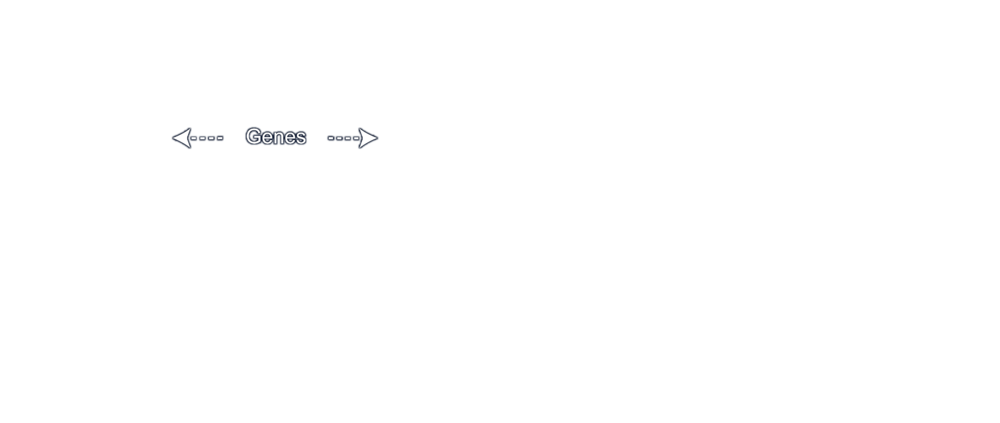
Genes
Stretches of that sequence that code for a protein. There are roughly 20,000 of them, and together they are under 2% of the sequence. For decades the other 98% was called junk. It is not: much of it decides which genes get read, where, and when. The regulation turned out to matter as much as the parts.
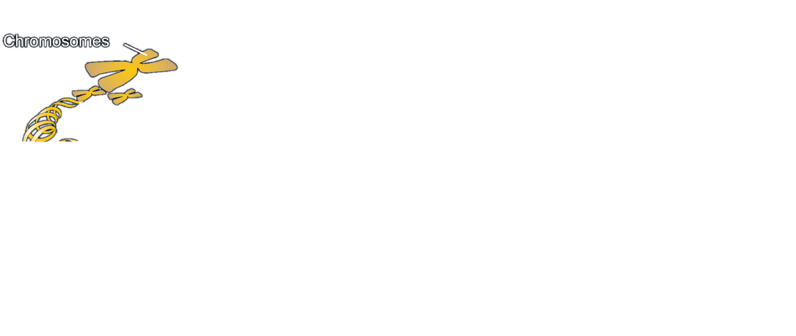
Chromosomes
The same molecule again, wound up for storage. 46 of them, 23 pairs, in every one of those cells. Nothing new is added at this level – it is the identical information at a coarser scale. Worth saying out loud, because the layers of an ‘omics are not a hierarchy of importance. They are a hierarchy of resolution.
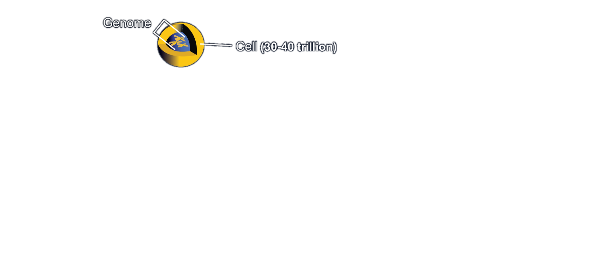
The cell
30–40 trillion cells in one human body. Every single one carries the whole genome – and reads a different part of it. A liver cell and a neuron are not different code; they are the same code, differently expressed. Which is the whole problem in one sentence: the parts list does not tell you what the system is doing.
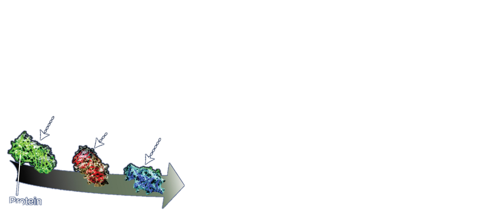
Proteins
What the genes are actually for. The sequence is the parts list; proteins are what gets built from it – and there are far more proteins than there are genes, because one gene yields many variants. This is where the causal story starts to run: not the letters, but the things the letters cause to exist.
Molecular machines
Proteins do not work alone; they assemble into machines. And function lives in the folded shape, not in the letters – which is why knowing the sequence was never enough. Predicting that shape from the sequence was an open problem in biology for fifty years. That is the one AlphaFold solved, and it is why this layer became measurable at scale.
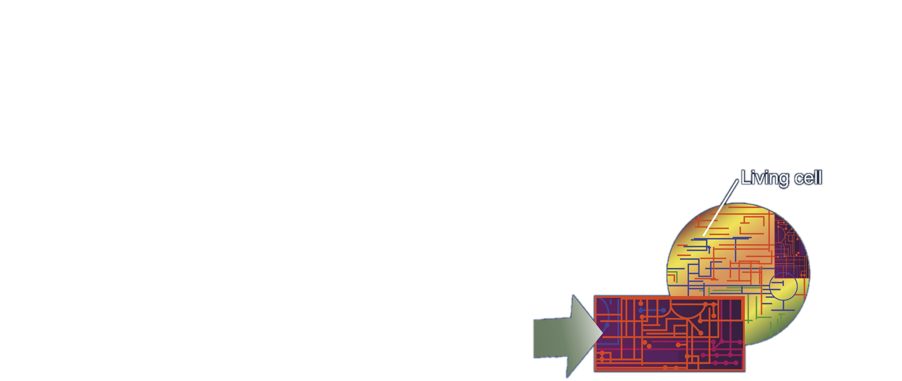
The living cell
The parts, wired together and running. Thousands of reactions at once, each regulating the others – behaviour, not components. None of this is visible in the genome, and none of it contradicts the genome. It is a different layer, and it has to be measured on its own terms.
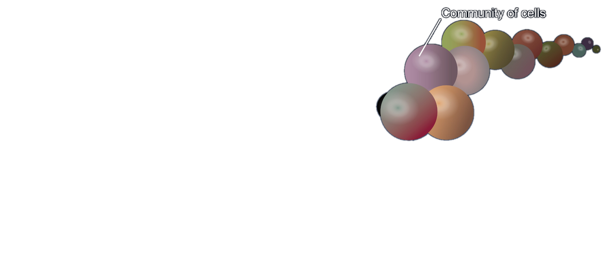
Communities of cells
Cells in communities: tissues, organs, an organism. The same move once more – each level is the one below it read at a higher scale, and each one needs its own instrument. Add the microbiome and it is not even all your own DNA: a second genome you did not inherit, carried around in the same body.
And then: integration
Each layer measured whole, then the layers read together. That integration is what makes it an ‘omics rather than a collection of facts. No single layer is the truth: the genome does not tell you the behaviour, and the behaviour does not tell you the code. We have nothing remotely like this for a conflict – which is the argument for the rest of the week.
Genome 2003 · complete only 2022 · microbiome 2007 · AlphaFold 2020 – the integration is younger than most people in this room.
genomics : the genome :: geomics : international interactions
We can profile a tumour in a day. We still size up how adversaries portray each other by hunch.
Notional example, not reality: ‘geomics’ does not exist as a field yet – this is one of many possible framings of what it might measure.
Reading meaning at this scale was impossible before large language models. That is what changed, and it is the only thing that changed. geomics.org
The AlphaFold moment
What happens when a field finally gets its instrument.
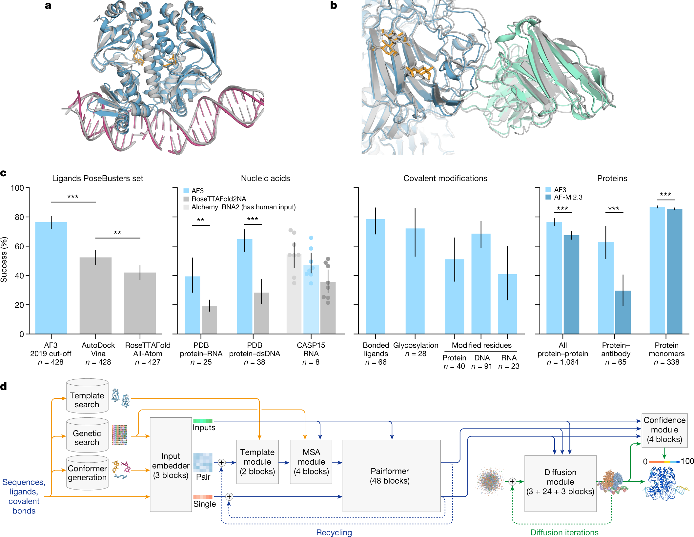
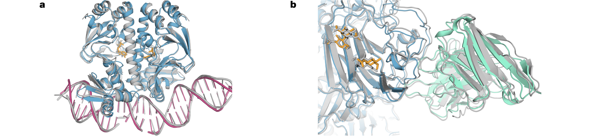
Prediction over experiment
Two solved test cases, not curated examples. Colour is AlphaFold 3’s prediction, grey is the actual crystal structure – a protein bound to DNA on the left, an antibody locked onto its target on the right.
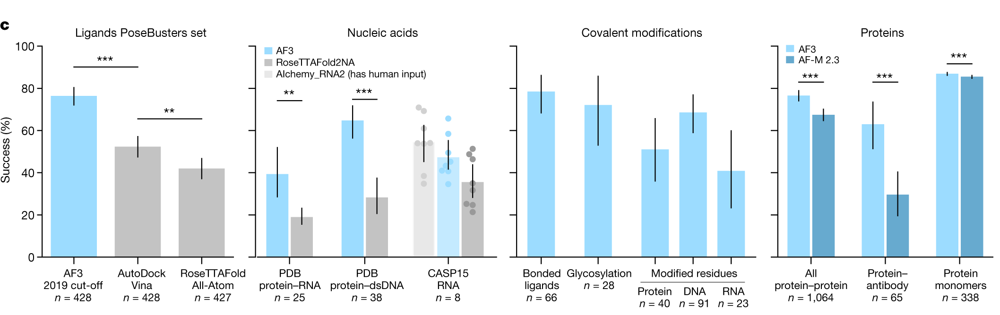
Tested against the field, not itself
Four separate benchmarks – ligands, nucleic acids, covalent modifications, protein complexes – each scored against the best prior method. AlphaFold 3 wins on every one.
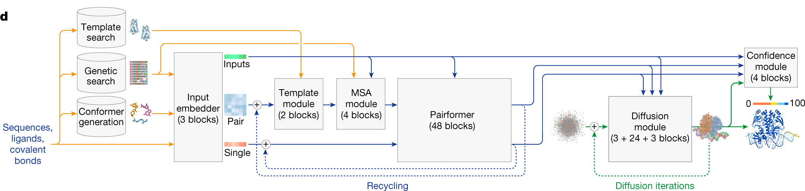
One network, any input
Sequences, ligands and covalent bonds go in; a diffusion module turns noise into coordinates. One model, not a pipeline of separate tools.
200 million structures
Against a couple of hundred thousand solved experimentally over decades – and now in minutes.
Beyond proteins
DNA, RNA and small-molecule interactions, about 50% more accurately than the methods before it.
Real-world impact
Drug discovery, food security, and much besides – and the 2024 Nobel Prize in Chemistry.
And for us?
Imagine the same leap for global crises and diplomatic behaviour. That is what this week is about.
Same organ, different disease
What precision oncology actually did – and the same picture, drawn for conflict.
One organ, one label
For most of the twentieth century this was the diagnosis: a tumour, in a lung. The label named where it was. Everyone carrying it got the same protocol – and when the protocol failed, the reading was that we had not given enough of it.
Same organ, different disease
Two patients, same lung, same scan, same stage – and four different diseases underneath. From 2004 onward it was the driver alteration that mattered: EGFR, ALK, KRAS G12C, PD-L1. The scan cannot see any of them. Only the molecular layer can.
The mechanism decides
Each driver gets its own drug – osimertinib, alectinib, sotorasib, pembrolizumab – and giving the wrong one does nothing, however correct the organ-level diagnosis was. Medicine did not get better at treating lung cancer. It stopped treating ‘lung cancer’.
Our categories are surface categories
Now the same picture for us. Interstate, civil, hybrid, insurgency, grey zone: every one of those names a place where the conflict surfaces, not a mechanism that generates it. It is the organ-level diagnosis – and it is what almost everything we have is labelled by.
The mechanisms are not a mystery
We have had the candidates for three decades: private information with incentives to misrepresent, commitment problems and issue indivisibility (Fearon 1995), domestic audience costs (Fearon 1994). Ask which of our corpora could tell you, for one given case, which of them was operating.
So the label still decides the response
Nothing routes through that row. The response is picked from the surface category, and when it fails, the reading is that we did not do enough of it. That is the humors loop again – and breaking exactly that loop is what precision oncology was.
What the week is actually about
Not more data. An instrument that measures the layers underneath the label, so the categories themselves can be tested, split, recombined or thrown away. On conflict we do not yet have the diagnosis, let alone the cure.
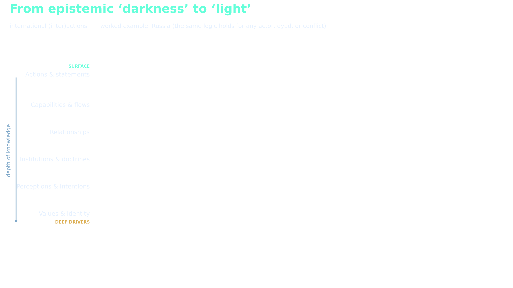
Six layers, one actor
The same stack the ‘omics slide just walked, drawn for a country. Surface at the top – actions and statements, the things that make it into an event dataset. Deep drivers at the bottom – values and identity. Every cell is something you could in principle measure. Russia here, but the logic holds for any actor, dyad or conflict.
This is what we actually have
Look at how few cells are lit. The surface layer is sampled – that is what our event data and our expert commentary cover. Below it, almost nothing. Not because those layers are unknowable, but because reading meaning at that volume was impossible until very recently.
So the response is one-size
A shallow read can only support a reactive, undifferentiated assessment. This is the chemotherapy column – treat the surface, treat everyone the same, and find out afterwards whether it worked.
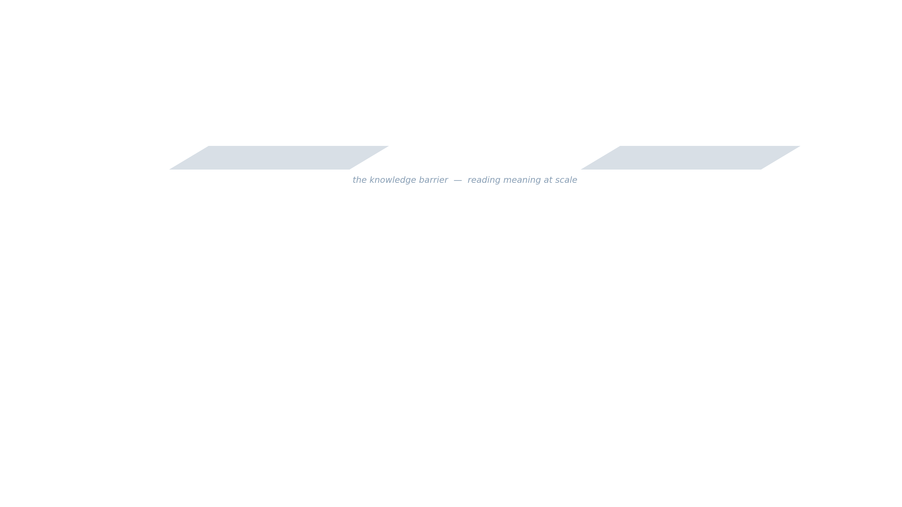
The knowledge barrier
What stood between the two columns was never theory and never willingness. It was throughput: reading meaning, in the original languages, at the scale the record actually exists at. That is a machine problem, and it was unsolved.
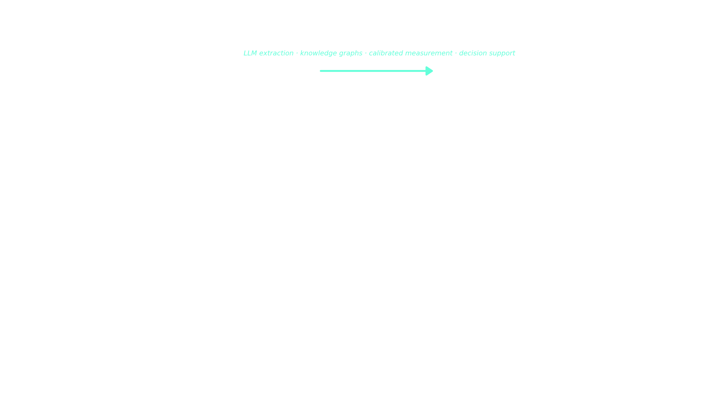
What changed
LLM extraction · knowledge graphs · calibrated measurement · decision support. Only the first of those is new – the others were waiting on it. The barrier came down in the last few years, on our watch.
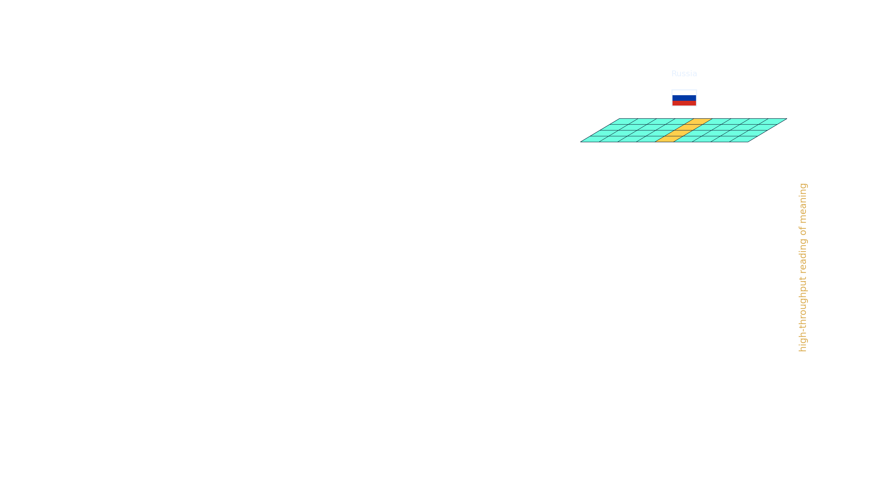
Every layer, measured
The same six layers, now densely populated – not a better dataset of the same kind, but the layers that were dark being read at all. This is the step that has no precedent in how our field works.
Wired together, and then it pays
The beam is the point: the layers read together, so a claim at the top traces to evidence at the bottom. A deep read makes a precise, tailored response possible – the immunotherapy column. This is the whole programme, and it is what the rest of the week is training you to do on your own question.
They did the homework. They got a vaccine.
Three habits we have, and one they gave up.
A callous disregard for empirics
Claims travel on plausibility and citation weight. The evidence is illustrative, chosen after the argument.
A callous disregard for recall
We optimise for the sources we found, never for the ones we missed – and we cannot see what we missed.
A callous disregard for systematic reasoning
Nothing is defined, so nothing accumulates. Every study starts the argument again.
The one they gave up: working alone
Isolated labs, unshared data, no common definitions – medicine had all three of our habits too. What it gave up was going it alone: defined the layers, measured each one whole, integrated results across institutions. Decades of unglamorous, coordinated work.
And so
They got a vaccine.Where is ours – for war, and for conflict?
Paradigm shifts across disciplines
The same crossing every time – from a sample of the thing, to the whole thing. Five neighbours made it. The sixth panel is ours.
Medicine
Was: treatment decisions rested on the clinician’s judgment, case by case. Now: evidence-based medicine guided by data analytics, with AI in diagnosis and treatment tuned to the individual patient – because the volume of medical data has doubled roughly every 40 months since the 1980s.
Biology
Was: research followed individual genes and proteins, one at a time. Now: high-throughput instruments read the whole genome at once, and protein design is done by machine. This is the ‘omics move, and it is the same crossing.
Sociology
Was: social research ran on sampling technique, because reading everyone was impossible. Now: whole populations, in real time – n = all. This is the row to stop on: every other field stopped sampling its object of study the moment it became possible to read all of it.
History
Was: the account rested on whichever records happened to be legible. Now: machines decipher texts nobody could read, and sources that were sitting there the whole time start changing the interpretation.
Political science
Was: campaigns ran on traditional outreach. Now: voter data is analyzed and messaging personalized at scale. That is a crossing too – and the one that raises the sharpest questions, about manipulation and about democracy itself.
And ours
Every neighbour made the same crossing, and each one crossed when measuring the whole thing became possible. International relations still works from a sample of its own object of study. The sixth panel is thinner than the other five, and that is the finding – not an editing failure.
What transfers, and what does not
Borrow an analogy for your own project this week – then say out loud, before anyone asks, where it breaks.
Reclassify by mechanism
Check what your own categories are named for. If a label names where something showed up rather than what generated it, you are diagnosing by organ, not mechanism – the mistake ‘civil war’ makes, and the one medicine gave up when it stopped naming tumours by location.
Change the unit, and N explodes
If your own topic seems to give you too few cases – 200 states, a handful of wars – do not assume it is unmeasurable. Ask whether a smaller unit hides inside it: the utterance, the démarche, the dyad-week. Re-unitise and your N can run into the hundreds of millions, which is exactly what made this kind of project affordable for you this week.
Measure a layer whole, then integrate
Before you integrate anything in your own corpus, measure one layer of it whole – all of it, not the convenient slice that happens to fit your deadline. A full layer first, then combine it with another. A convenient slice will not generalise, however good your method looks on it.
Shared names, or nothing pools
HGNC names every gene once, so two labs studying the same thing can compare results directly. Write down your own category definitions this precisely – a label you cannot define exactly cannot be compared across your own two datasets, let alone with anyone else’s.
No central dogma
Biology has DNA → RNA → protein, a known, one-directional chain, so a correlation there can be read as a mechanism. Ask whether your own material has anything like it. If it does not – and for most social material it will not – say ‘estimated, not assumed’ on your own slide too.
No experiment
A lab can knock out a gene and watch what happens, as many times as it likes. You almost certainly cannot run that experiment on your own topic either – every case you study is observational, unrepeatable, and already shaped by its own context. Name what you are substituting for an experiment, before someone asks.
The specimen reads the paper
A tumour does not change its behaviour because its profile was published. The people in your own project might. Ask whether they could read your findings and act differently because of them – reflexivity has no analogue in biology.
No registry of failures
Adverse drug events must be reported by law, so medicine keeps a record of what failed. Look for that registry in your own field – forecasting failures carry no such obligation, so yours vanish unless you write them down.
Lead left, say the right column first
Whatever method or analogy you borrow for your own project this week, the left column is what you can actually test and build on. But say the right column’s limits out loud before your reader finds them: no known chain of causation, no experiment, no registry of your own past misses, and a subject that may read what you write about it. Naming the limit yourself is what makes a borrowed method credible instead of glib.
Every neighboring discipline crossed over. Why didn’t ours?
Two answers. Neither of them is about the tools.
The instrument, and it is countable
Biology did not just decide to be more rigorous – it built a shelf and paid to keep it. BioPortal alone carries 1,149 ontologies holding 15,665,240 defined classes and 99,561,419 mappings between them. Every one of those mappings is a promise that two groups studying the same thing can put their results side by side.
1 · We never built the instrument
Biology has the Gene Ontology, medicine has SNOMED and ICD. We have no shared, defined vocabulary for what we study – so nothing anyone measures can be compared with anything anyone else measured. Our datasets each carry their own codebook, and a codebook written for one project does not join to the next one.
2 · The incentives point the other way
A new framework is publishable; a measurement layer is infrastructure. The work that would have let the field cross over is the work nobody is rewarded for doing. The left-hand shelf is not missing because it is hard – it is missing because no career here was ever built on maintaining one.
Part 2 · how we search
How do we currently do it?
You tell me.
How search is typically done today
Solitary, poor, nasty, brutish, and short.
In 99.9% of cases it is not explicit
And it is not documented. Every link in that chain is missing: why those sources and not others? which excerpt exactly? complete citation? alternative readings? A reader cannot check any of it, and neither, six months later, can you.
What we lean on instead
Presumably authoritative sources – peer-reviewed, most-cited. Trust me, I know the literature. And herd behavior: the same handful of works get cited because they were cited, which measures circulation, not fit to your question.
The alternatives that already exist
None of this is a tooling problem. Bibliometric databases – Scopus, Web of Science, Lens – already return a source set you can write down, hand over, and have someone else rerun. And, cheating, so does syllabus site:.edu, which gets you what the people who teach the subject actually assign.
The sophistication of our queries
Measured in our own literature.
Problems with search today
Three, and only one of them is about the tools.
Access
Paywalls and terms of use. We are unusually fortunate here through RuBase, which is exactly why it is easy to forget how binding this is for everyone else – most of what exists sits behind a gate you personally never see.
Time – the constriction that actually decides
Small projects force researchers to the low-hanging fruit: to narrow, risk-averse precision, and to neglect recall. It is not the paywall and not the interface that decides what gets read; it is the fortnight you had.
Search query syntax
Many datasets have decidedly suboptimal search. Nearly all are keyword-based old-school search; not even proximity operators are always implemented – so the question you are able to ask is smaller than the question you actually have.
And then it is yours
We are stuck with that to build the corpus – which we can then play with the way we want, with unsupervised and semi-supervised NLP tools. The three constrictions bind the harvest; they do not bind what you do afterwards.
Precision and recall
Two numbers. Almost everyone optimises the one they can see.
The frame
Everything your field could have found on your question. Not what is in your library, not what is in your database – everything that exists. Both numbers are measured against this, which is already the uncomfortable part.
Relevant
The documents that actually bear on your question. You never see this set. It is defined by the question, not by your query, and nothing in your workflow ever shows it to you.
Retrieved
What your query returned. This is the only set you ever look at, which is why it quietly becomes your picture of the field – and why the two circles being different sizes is the whole problem.
Recall
Of everything relevant, how much you got. The denominator is the set you cannot see, so recall cannot be computed from your results – only estimated, and only if you go looking. Almost nobody does.
Precision
Of what you retrieved, how much was relevant. You can compute this: it is all sitting in front of you. That is exactly why it is the one everyone optimises – not because it matters more.
The four cells
Three of them you can inspect. The fourth – relevant, not retrieved – is invisible by construction, and it is the only one that decides whether your literature review is a review of the literature. Every AND and every NOT is a bet on that cell being empty.
Now a real number
Our own Integrum corpus on Russian deterrence – сдерживание, устрашение, запугивание – holds about 31,000 publications. That is the denominator for anyone writing about how Russia thinks about deterrence.
And the numerator
The best Western work on exactly this: a CNA study that went from 700 sources to 144; monographs that often clear 200; Jonsson's book at 449. All careful scholarship. Against 31,000. That is not a precision problem – it is a recall problem, and nobody reports it.
What would a useful search even look like?
Two questions, then six metrics.
Two questions, before any metric
Are we looking for good or excellent articles, or for good knowledge and insight? Those are not the same target. And for either one the hard half is the second half – and how would we know? Everything below is an attempt to answer that.
Metrics of usefulness
Before you can call a search good you have to say what good would mean. Six metrics, drawn here on eight axes because diversity fails three separate ways. They trade off against one another, which is why the shape matters more than any single number.
Precision and accuracy
Just narrow (influencing / IR / EUR to RUS), or broad (influencing / IR, or even influencing / human)? A typical search is tuned hard on precision and collapses on everything else – that is the spike. It is a defensible choice, but it is a choice, and it is almost never made out loud.
And then
Recall · authoritativeness · quality · diversity: semantic, disciplinary, linguistic. Diversity is the one nobody optimizes for, and it is the one that decides what your field turns out to contain: a search that reads one language, one discipline and one phrasing has already written its conclusion.
The peer-review crisis
Not an anecdote. Every bar is a counted number, current to late 2025, and the trend runs the wrong way.
The scale
Thirteen thousand papers were retracted in 2023 alone. By August 2025 the cumulative record stood at roughly 55,000 – the gold bar, which is the container everything below it comes out of.
Fake peer review
More than 6,400 of the 2024–25 retractions were attributed to fabricated review. The mechanism that is supposed to be the safeguard is itself a large share of the failure.
Paper mills, and one publisher
About 2,300 cases are traced to paper mills, and mills account for roughly a fifth of every health and life-science retraction since 2016. Hindawi alone pulled more than 8,000 articles in a single clean-out.
And now, generated text
2,100 retractions are already linked to AI-generated content, flagged by “tortured phrases” and by text a model plainly wrote. It is the smallest bar on this chart and the youngest one. The volume problem and the trust problem are now the same problem.
DARPA SCORE
An outside, funded program built to grade the credibility of social-science claims.
DARPA runs this, not us
DARPA publishes this under its own “Our Research” heading, beside its hypersonics and autonomy programs. The critique you are about to hear is not a slide made by an outsider with a grudge.
The Pentagon is the customer
The Department of Defense buys social and behavioral science and acts on it; the Minerva Research Initiative funds it directly. A customer that large eventually asks how much of it holds up.
Defense Advanced Research Projects Agency › Our Research › Systematizing Confidence in Open Research and Evidence
Systematizing Confidence in Open Research and Evidence (SCORE)
Program manager · Dr. Philip Root
SCORE, and it has an owner
Systematizing Confidence in Open Research and Evidence, run by Dr. Philip Root: a named program with a manager and a funding line, not somebody’s opinion about the state of a field.
“… many SBS results vary dramatically in terms of their ability to be independently reproduced or replicated”
DARPA, SCORE program page
DARPA’s own diagnosis
Empirical studies and meta-analyses, it says, have revealed that many results vary dramatically in whether they can be independently reproduced – with real-world implications for DoD’s plans and decisions.
The bar it set itself
“These tools will assign explainable confidence scores with a reliability that is equal to, or better than, the best current human expert methods.”
Filed under
Algorithms
Analytics
Automation
Data
Forecasting
Processing
Trust
What the program had to build
Not a verdict on a literature but a machine: explainable confidence scores, assigned automatically, as reliably as the best human expert methods. The tags name the hard parts, and the last one is the point.
Not our opinion of the field
An external, funded program to score the credibility of social-science claims. The reliability problem is not a complaint from outside the discipline – it is the field’s own finding, and its largest customer budgeted against it.
The social and behavioral sciences reliability crisis
Citation counts cannot tell a replicated finding from one that never held up.
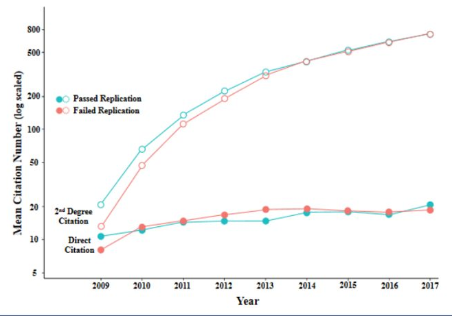
Two outcomes, one citation record
Every paper here was later put through a replication attempt, and the figure splits them by the result. The teal curves are the papers whose central finding held up; the red curves are the papers whose finding did not. The upper pair counts second-degree citations, the lower pair direct ones.
The curves lie on top of each other
In the lower ring, direct citations, the replicated and the unreplicated papers were never distinguishable at all. In the upper ring the second-degree curves separate briefly around 2010 and then close again, so by 2014 a failed finding is being cited about as often as one that held.
Alvaro de Menard
@AlvaroDeMenard · 11 Sep 2020
“Over the past year I have skimmed through more than 2,500 social science papers. I wrote a giant post about everything that’s wrong with them and how to fix the process that generates them.”
One reader, 2,500 papers
The chart is one study of one sample. This is a second, independent look: a forecaster on the Replication Markets project read across the literature himself and wrote up what he saw. It is not a model of the field – it is what the field looks like to someone who read it.
expected to replicate and no improvement at all across 2009–2018
Fewer than three in five
Just over half of the papers he read were expected to replicate, and that share did not rise over the decade. This is the base rate a reader has to assume before opening anything.
What the audit found
Six results, and the two in the middle are the ones that matter for a search strategy.
54% expected to replicate
No improvement between 2009 and 2018
Replication and citations uncorrelated
Replication and journal status uncorrelated
The replication crisis started in the 1950s
Power, incentives and interaction effects all implicated
Citation count and journal prestige move independently of whether a finding is true. Neither is evidence, so a literature search that ranks by either is ranking by something else.
The reliability crisis, continued
Market-estimated replication probability, one distribution per year, 2009–2018.
100%
75%
50%
25%
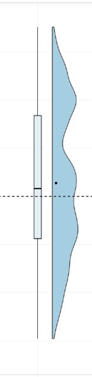
2009
Year of publication
One year, drawn four ways
For 2009 the pale box gives the quartiles of the estimated probability that a paper would replicate, the thin whisker gives the range, the dot is the mean, and the colored curve beside it is the whole distribution. The middle of it sits close to one half.
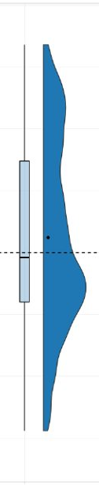
2010
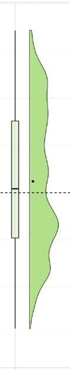
2011
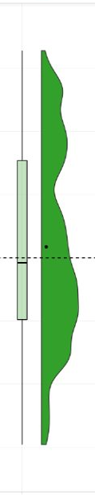
2012
Three more years, the same shape
2010, 2011 and 2012 repeat it. The curves are lumpy in different places, which is sampling noise, but the box, the whisker and the mean land in the same band every time.
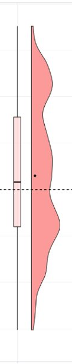
2013
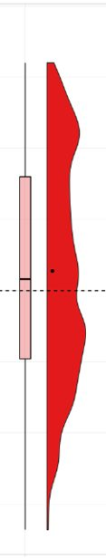
2014
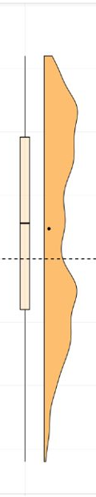
2015
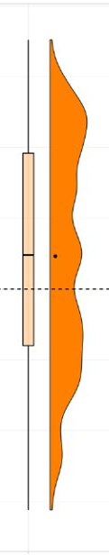
2016
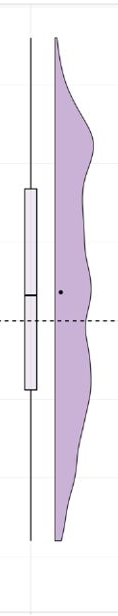
2017
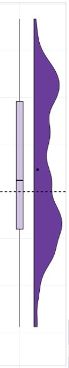
2018
The whole decade
2013 through 2018 close the series. Ten years of published social and behavioral science, and no year’s crop is visibly more reliable than any other year’s.
50%
52–56%
the full range of all ten annual means, read off the dots on this chart
The line at one half
The dashed rule is fifty percent. Every annual mean dot sits between 52 and 56 percent of it, so a finding drawn at random from any of these ten years is about as likely to replicate as not.
Ten years, no trend
The distributions are the measurement, and they do not move. Nothing in this record shows the field becoming more reliable between 2009 and 2018, which is why the reading strategy has to do the work the publication record is not doing.
Broad versus narrow
The aperture decides what your field is allowed to contain.
McNamara’s first law of defense analysis
A book, a photograph, and the paragraph that starts every analysis.
How Much Is Enough?Enthoven & Smith, 1971
The book that wrote it down
Alain Enthoven and K. Wayne Smith ran systems analysis in the Pentagon and then set out how the defense program had actually been shaped between 1961 and 1969. It is still the standard account of what analysis inside a defense ministry is for.
Robert S. McNamaraDefense Secretary, 1961–68
The man the rule is named for
McNamara arrived from Ford and insisted that every major program be considered and analyzed as a whole rather than line by line. The habit he imposed on his staff is the one this book records, and it long outlived his own record in office.
Page 54, highlighted
The rule is not in a manual or a doctrine note. It is one aside inside a paragraph about why the number of Draft Presidential Memoranda kept growing.
“Always start by looking at the grand totals. Whatever problem you are studying, back off and look at it in the large. Don’t start with a small piece and work up; look at the total first and then break it down into its parts.”
Enthoven & Smith, How Much Is Enough?, p. 54
McNamara’s First Law of Analysis
Read it as a rule about scope, not about arithmetic. The grand total is whatever the whole of your problem is, and you are not allowed to start inside it.
THE GRAND TOTAL
▼
partpartpartpart
Total first, then the parts – never a part first and upwards.
Why it is the first law for this week
A literature search is the same move. Ask what the whole body of work on your question looks like before you ask what any one paper says, because a search that starts from the paper you already know only ever returns its own neighborhood.
Metascience is here
A live map of the literature already exists – for biomedicine, not for us.
Expand your research
From preprints to papers, biomedical science has now outpaced search. Expand your research with context, not keywords. Get started with a custom feed – it’s free, forever.
Create Research Feed
A field that studies its own literature
This is not a library catalog and not a publisher’s storefront. It is infrastructure built by biomedicine, for biomedicine, on the premise that its own literature has outgrown the search box. The pitch is a diagnosis: search has been outpaced.
The picture is the argument
The artwork is a graph, not a list: papers, authors, topics, and the edges between them. ‘With context, not keywords’ means searching the structure of a field rather than the strings in its titles – which is exactly what Day 2 teaches you to do by hand.
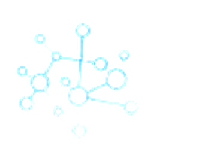
A live map of science, powering your feeds
Live, not annual
The first promise is that the map moves as the literature does. A field with a live map can ask how much of itself it has read. A field without one can only ask what its last search returned.
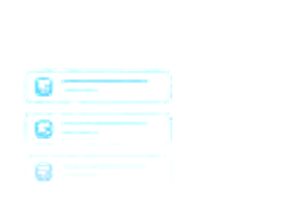
Stay organized, on the edge of what’s new
Organized by default
The second promise is a standing feed instead of a repeated search. That is the same move as keeping a corpus in Zotero rather than re-running a query: the difference between a project that accumulates and one that starts over.
Meta is ad-free and free to use, forever
Free, and therefore common
The third promise is the least glamorous and the most consequential: no paywall, no advertising. Infrastructure everyone in a field can reach is what makes a shared picture of that field possible at all.
We have not built this
Other fields built a discipline for studying their own reliability. We have not. Nothing on this page is technically hard. What is missing on our side is not the engineering – it is a field that has decided its own literature is worth mapping.
Why at least try broader?
Take a research question you already have. Say, models of regionalism.
The literature you already know
Search the way you were trained and you land inside the comparative literature on regionalism. It may already be doing the work of identifying those models for you.
And the cases that were never in it
Studies of one regional organization, each sitting in its own area-studies stovepipe. They were never gathered into the comparative literature, yet many ask a similar question, or carry a design worth stealing.
Which leads somewhere
Read those single cases against the comparative frame and you get new research questions, and new research designs. Not a longer bibliography – a different one.
And mainly because now we can
It used to be a daunting prospect. Today we collate large bibliometric and full-text datasets, explore them, and find the relevant text spans far more quickly and intelligently – breaking through the stovepipes, and building more transversal knowledge.
Towards strategic analysis 3.0
From analogue to digital, and then: text is data.
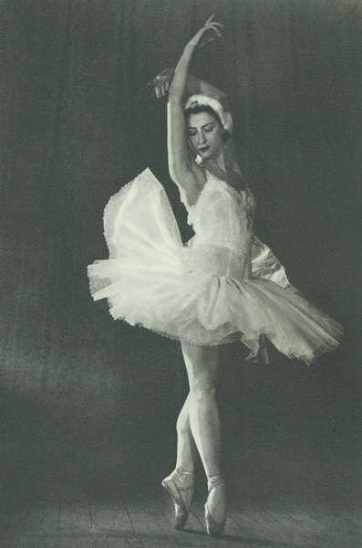
Analysis 1.0
The ‘expert’ / ‘scholar’
1.0 · the expert
One scholar, deep reading, a judgment you either trust or you do not. Analogue: a single mind, working alone, with no way for anyone else to check the reasoning that produced the verdict.
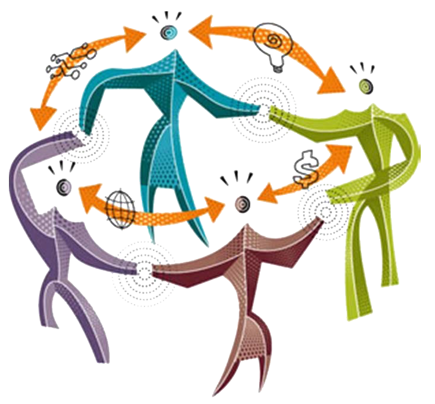
Analysis 2.0
Multiple perspectives
→
from analogue to digital
2.0 · multiple perspectives
Several experts, structured methods, contending views. Digital, but still bounded by how much a team can read: more perspectives than 1.0, yet the ceiling is still human reading speed.
Analysis 3.0
Towards knowledge graphs?
→
text is data
3.0 · text is data
The record itself becomes measurable, at a scale no reading team reaches. Every document becomes a source of structured claims – toward knowledge graphs built from thousands of texts at once.
Towards cumulative knowledge building
The point of the arrow
Toward cumulative knowledge-building – each study adding to a structure rather than restarting the argument. That is what makes 3.0 different in kind, not just in scale, from 1.0 and 2.0.
From pub-centric to knowledge-centric
The unit of knowledge is changing under us.
from…
From: the publication
The paper is the atom. To know something you find, read and remember whole documents – and the pile grows faster than anyone can read it. Every fact worth knowing has to be rediscovered by whoever reads it next.
…to
To: the claim
The atom becomes the individual claim, extractable and comparable across thousands of documents at once. A model like this becomes the interface: ask a question and get an answer assembled from claims across the whole record.
What that costs you
A claim you cannot trace back to its source is worthless. Everything this week does about provenance exists because of that.
From data to decisions: the ‘real’ IR vs ‘our’ IR
Five rungs. Most of our field uses two of them.
Data
Signals. Numbers, text, audio, images, video. On their own they know nothing – a raw pixel or a logged timestamp carries no meaning until something is done to it. This is the only rung most of the field ever really works with.
Information · given context
Data given context becomes information: useful, organized, structured. A number turns into a reading only once you know what it measures, in what units, against what baseline.
Knowledge · given meaning
Information given meaning becomes knowledge: contextual, synthesized, learned. This is where isolated facts start to connect into a picture that holds across cases, not just the one in front of you.
Insight · given focus
Knowledge given focus becomes insight: applied, integrated, actionable. It is knowledge aimed at a specific question, sharpened enough to change what someone actually does next.
Decisions · given purpose
Insight given purpose becomes decisions: change, movement. This is the only rung that leaves the page and enters the world – and it is the top of a ladder that took four steps to build.
And what we actually do
We jump from data straight to insight and decisions, skipping information and knowledge entirely – no shared structure, nothing that accumulates. That short-circuit is the whole problem this week is about.
RuBase – what’s in a name
Ru – Base. Three readings, and the third is the point.
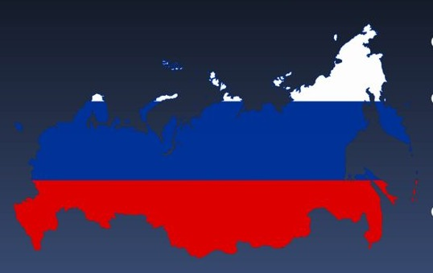
A knowledge base
Somewhere the evidence actually lives, rather than being rediscovered from scratch on every new project. Sources, extracts and judgments accumulate in one place instead of surviving only in someone’s head or a folder that quietly gets lost.
The base of the DIKW pyramid
The layer our field skips. Data made into information and knowledge, so that insight has something underneath it – a foundation the ladder from the last slide can actually stand on, instead of a jump straight to the top.
A new foundation
For collaborative, cumulative knowledge-building – work that adds up across people and years instead of restarting.
How? Spiral development
Three tracks, spiralling down together – with SMEs in the loop at every turn.
Text
Text
Build the text corpora, then the text–mining tools to work them. Textmining the corpora turns raw documents into findings – with subject–matter experts interacting at every turn, top to bottom.
Collaboration
Collaboration
The middle track is the meshing layer: new forms of collaboration between people, then meshing text × data so the other two tracks’ findings actually talk to each other.
Data
Data
Collate and join existing datasets, build new ones where none exist, then datamine them. All three tracks converge into one RuBase data warehouse, ready for exploitation.
Can this be made sustainable?
That question is printed right on the diagram – and it is the honest one. A spiral you run once is a project; a spiral you can keep running is an infrastructure.
‘Wissensanhäufung’ 3.0
Standing on the shoulders of giants – but how, exactly?
Standing on the shoulders of giants
One scholar climbs onto the back of the one before her, looking further only because of who came first. It is the oldest description there is of how knowledge accumulates – Wissensanhäufung, literally ‘knowledge–piling’.
It takes a crowd
A castell – a Catalan human tower – makes the metaphor literal: nobody climbs without a base of many hands holding firm underneath. Piling up knowledge is a team sport, not a solitary climb.
But how?!?
Everyone agrees knowledge should accumulate. Almost nobody says how the piling actually happens. That question is the bridge into this week.
The RuBase–RUW sunburst app
A live artifact, open right now – not a mock-up.
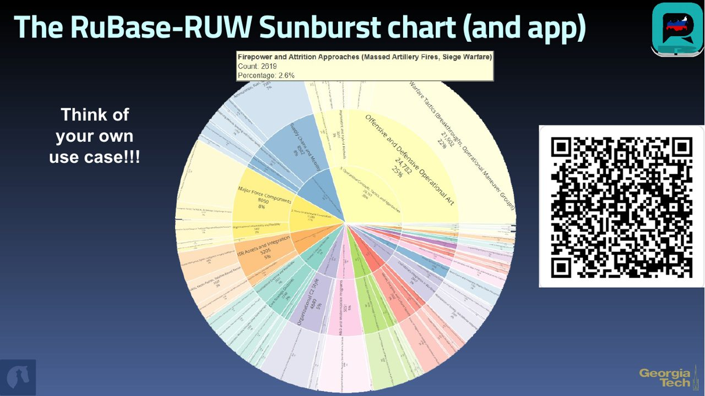
One taxonomy, drawn live
Each ring is a level of the RuBase–RUW taxonomy; wedge size is how often that category shows up in the corpus. The tooltip reads out one leaf exactly – 2,619 records, 2.6% – nested inside Offensive and Defensive Operational Art at 24,782 records, a quarter of the whole corpus.
It's live – scan it
Not a mock-up: the code opens the actual app, deployed and running, exactly as shown here.
Think of your own use case!!!
That instruction is printed right on the slide. Before we move on: name one messy, textual domain of your own that a tool like this could make navigable.
What this has actually produced
Four projects, one method – the one you will use on your own question. On a single axis, so the sizes are comparable rather than impressive.
WACKO
Official Russian documents set against the semantic echoes of more than a thousand Russian philosopher books. The question is not what a doctrine says, it is which older argument it is repeating.
Red Lines
Sixty-three years of declared Soviet and Russian thresholds, coded and placed against Western moves. The finding is a null one and is reported as such: they do not – yet – track Western provocations, or the reverse.
Gray Horizon
A taxonomy of below-threshold conflict: 1,400 taxa across thirteen dimensions that vary independently of one another. On the shared axis it sits beside WACKO, nearly three orders of magnitude below what comes next.
Regeneration
More than a million taxonomically annotated text chunks in one corpus. The same pipeline as the other three, run at a scale where you can no longer check it by reading – which is why Thursday is spent on reliability.
What all four end in
The same object every time: a corpus you can read through its own taxonomy, one arc per taxon carrying its own count, and any single taxon reopened as a time series. Both panels are our own dashboards, on the military-affairs corpus – the shape is what the method produces, whatever the subject.
Before tomorrow
Day 2 · Tuesday 1 September
Corpora
Finding what you have been missing – and proving that you found it
11:00 – 13:30
The scholarly record on your topic
How many publications do you think already exist on your own research topic?
?
Pick a number
Before anything else appears: how many publications do you think already exist on your own topic, in the databases you already know? Hold that number.
What people guess
Web of Science and Scopus, searched the way most of us were trained to search them, hand back a few hundred publications on a topic. That number feels like the field, so it becomes the answer.
One topic, broken out by field
This is the field-of-study breakdown of a single working corpus, straight off the dashboard. It is not a reading list of a hundred titles – it is tens of thousands of publications spread across several dozen disciplines.
1,000 to 150,000 per topic
Political science alone carries 9,154 publications here, law 4,740, foreign policy 3,222. Laid on a logarithmic axis, the few hundred you started from is one tick, near the left-hand end.
Which is the problem
This is an assumption, not a database query – two papers a day, every working day, for a year, comes to roughly 700. That is the same order as the opening guess, and two decades of reading short of even the smallest end of the real record. Not a little beyond human capacity. Far beyond it.
Misleading tips of icebergs
What you can see is not what is there – and here, it is worse than it looks.
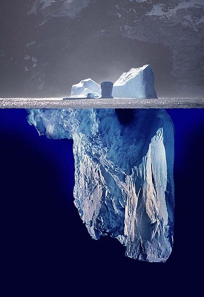
What a casual search turns up
A quick pass through the familiar databases surfaces a solid-looking mass of ice above the waterline – the studies that were easy to find, easy to cite, and easy to cite again. It looks like the literature, because it is all anyone can see.
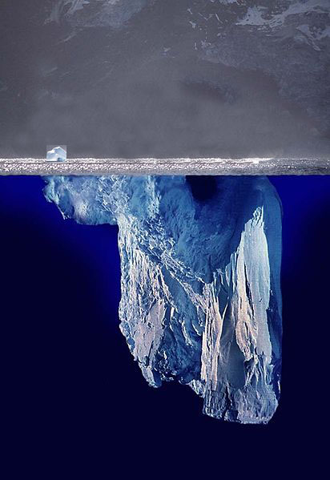
The same berg, searched differently
Change the database, the language, or two words of the query, and the visible tip shrinks to a nub. Nothing about the field moved between these two photographs – only the vantage point of the search did. Which photograph is our own search?
WATERLINE
▲ Above it · whatever one search happened to return.
▼ Below it · the identical mass, in both photographs.
The mass never moved
Draw the waterline in and the point lands: below it the two pictures are the same ice, in the same place, at the same size. Every search report describes the part above the line. No search report describes the part below it.
32
average bibliography entries per publication in our own RFSDP bibliometric corpus
one tick, one reference
Thirty-two references – that answers it
In our own RFSDP bibliometric corpus the average publication cites thirty-two sources. Set against the 1,000–150,000 records a single topic can hold, thirty-two ticks is the small-nub photograph, not the two-peak one. Our own results are the tip that shrank, and the mass under it has still never been counted.
We are the small-nub iceberg
Our own non-systematic reading is not the reassuring, bigger-tip iceberg – it is the one with the nub, the huge mass still unseen underneath. A systematic search goes after that mass, and says out loud how much of it it still expects to have missed.
Two ways to explore the full record
One reads its shape, the other its content. Search is the bottleneck in both.
BIBLIOMETRICS · reads the SHAPE of the record
Who is publishing
The most active authors in the set, ranked by document count. Nobody read a single paper to produce this – it is the record’s own metadata, counted.
Out of which institutions
The same question asked of affiliations instead of people. It tells you which places own a literature, and it usually shows a field to be thinner and more concentrated than it felt from the inside.
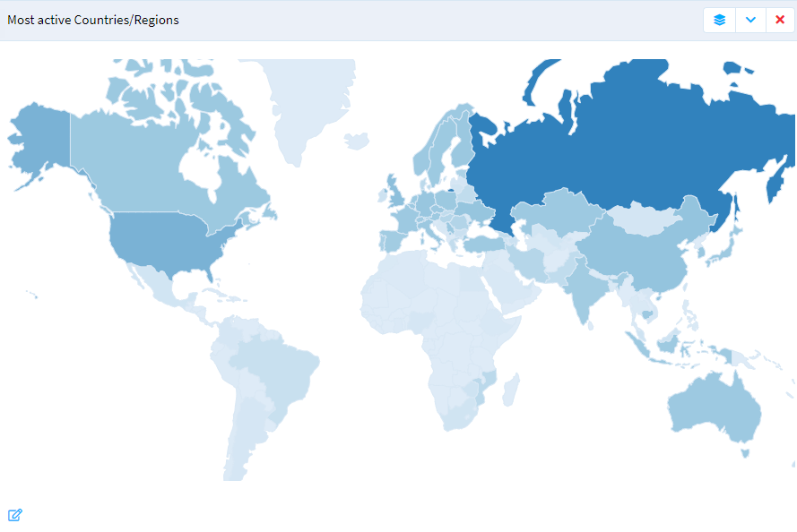
And from where
The same records mapped by country. Reading the shape at this level answers what no reading list can: who is absent, who is over-represented, and whose scholarship you are quietly not citing.
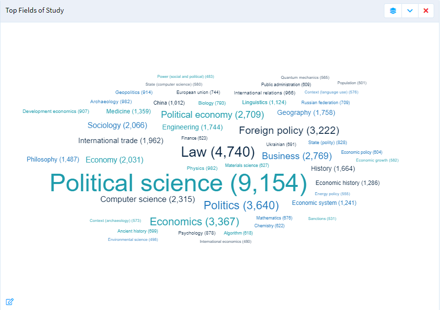
And about what
Fields of study sized by how many publications carry them – political science 9,154, law 4,740, foreign policy 3,222. That is the record describing its own subject matter back to you.
LLMs AND RAG · read the CONTENT
The other way: read the content
The same corpus, gone through sentence by sentence, returning claims rather than counts – who did what to whom, and where the text says so.
And almost nobody does either
Our own RFSDP corpus: 257 of 175,010 publications mention bibliometric at all – fewer than 0.15%. Both routes run on search, and we are not very skilled at it.
Where to get the data
The bibliometric databases, and what is wrong with each of them.
YOU PAY FOR THESE
Subscription-based
Scopus, Web of Science, Dimensions and scite_ are sold by subscription, and at the scale you need – whole fields, not single papers – they are (very) expensive. Whether your university buys one of them decides what your corpus can contain.
THESE ARE OPEN
Hard to access anyway
Google Scholar, Crossref, Semantic Scholar, OpenAlex, the Lens and 1findr are free to query. Retrieving in quantity is another matter: rate limits, export caps, and pagination you have to write code around.
AND THIS ONE IS GONE
And one of them simply stopped
Microsoft Academic is on this wall because it was one of the good ones, and it was switched off. Anything built on it stopped working, and a corpus assembled from it can never be refreshed.
Of disappointing quality
Many inconsistencies and omissions, even within a single database: a missing DOI, one author under three spellings, a year that disagrees with the article’s own title page. The grid is the shape of the problem, not a count of it.
Significantly overlapping
These are not independent samples of the literature. They share sources and they share each other’s metadata, so the second and third add far less than their headline counts promise. More sources is not more coverage.
And few value-added services
Surprisingly few, given the price: disambiguation you cannot trust, no full text, and little help with anything past the citation. The one you can afford is usually the one that decides your corpus – budget picks the database, the database picks the record, and the record picks the finding.
And then into Zotero
Search once, own the corpus.
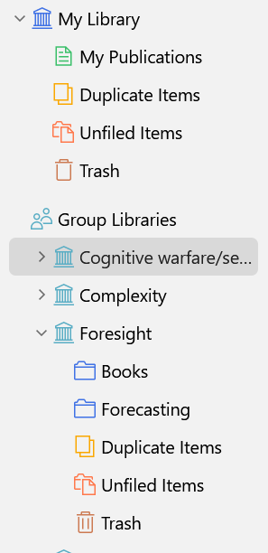
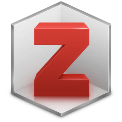
Their library, their structure
A personal library, shared group libraries, and inside them collections you named and nested – here ‘Cognitive warfare/security’, Complexity, and a Foresight library with its own Books and Forecasting folders. Results land in a structure you built, not in a search session that expires when the tab closes.
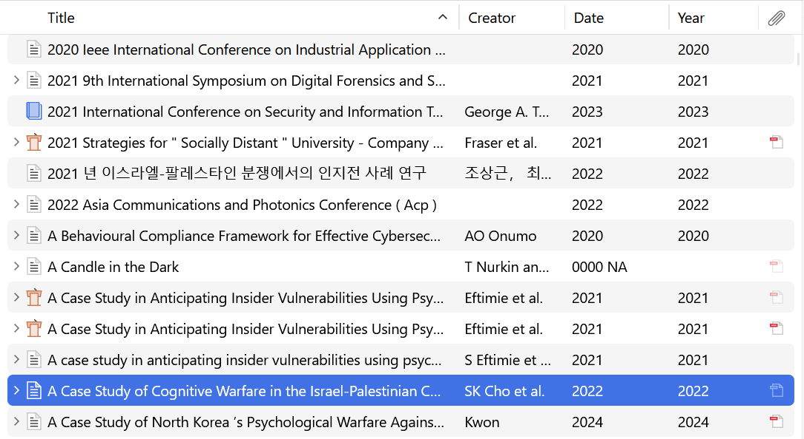
Every hit, kept
Title, creator, date and year for every item the search returned, in one sortable table. Note the Korean-language row sitting between the English ones: the library keeps what the reader cannot yet read, which is the recall problem made visible on your own screen.
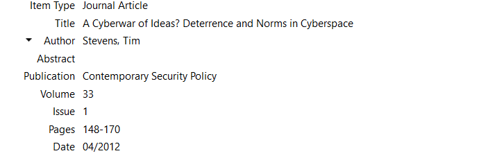
A record, not a citation
Selecting a row opens the whole record: Stevens, A Cyberwar of Ideas?, Contemporary Security Policy 33(1), 148–170, with DOI, ISSN, URL and the catalog it came from. That is enough to re-find, re-cite and re-check the item years later without the database.
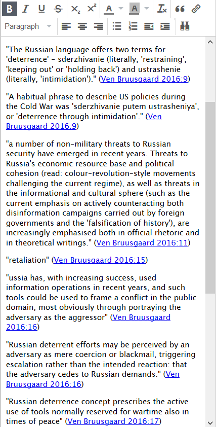
Their reading, attached to the record
Quotations live on the item, each one carrying its page – here seven passages on sderzhivanie and ustrashenie, stamped (Ven Bruusgaard 2016:9), (2016:11), (2016:16). The reading is stored where the source is, so a note can never lose its provenance.
RIS·BibTeX·CSV·JSON
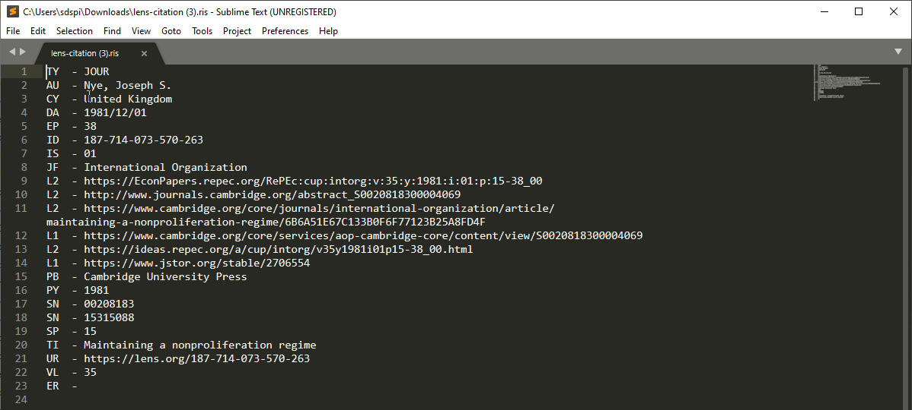
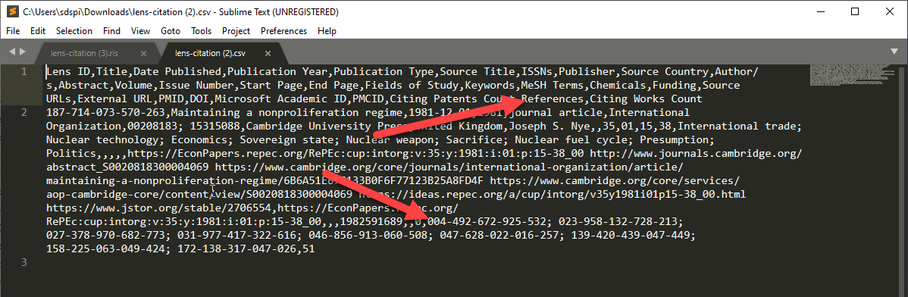
And it leaves in a portable format
The same item written out twice – one tagged field per line as RIS, then one long comma-separated row as CSV, carrying the reference and citing-works counts that make bibliometrics possible at all. Nothing in the library is locked to the platform it was found on.
Yours, and it stays yours
The corpus is yours and stays yours. Structured by you, annotated by you, exported by you – and still readable long after the database session, the subscription and the platform have all gone away.
An epistemic MRI
The deterrence literature, 1958–2020: 810 articles, 2,312 terms, 41,868 links.
The whole field in one scan
Every dot is one of 2,312 terms, sized by how often it occurs and colored by the cluster the algorithm put it in; every thread is one of 41,868 co-occurrences between them. Twenty clusters emerged on their own – strategic stability, cyber deterrence, nuclear weapon, arms control, world order – and nobody read an article to find them.
Ten stars, and Russia is inside
The rings mark every term the map flags with a red star: russia, russian federation, russian academy, russian thought, russian government, new russia, america russia and three more. Nine of the ten sit in the dense right half of the map, among arms control and nuclear deterrence; one sits far out on the left edge on its own.
What the field got excited about, and when
The same tool reports citation bursts – terms whose use spikes for a run of years. Eleven of the fifteen are drawn here, in the order they began: cyber deterrence is the strongest at 9.0, and russia bursts from 2016 to 2020.
The same corpus, laid out in time
The identical network redrawn against a calendar: 1958 at the left edge, 2020 at the right, one lane per cluster. Of the nine red stars on it, seven fall after 2005 and four after 2012.
An MRI, not a bibliography
This scans a whole field’s vocabulary; it does not hand you a reading list. It tells you where your topic sits, what it is next to, when it arrived and how much of the field it actually occupies – four questions a keyword search cannot answer, because a keyword search returns only what you already knew to ask for.
Three places to ask – and they do not agree
The same question, three free databases, three different answers.
1 · The Lens
Free, no subscription, and the only one of the three that indexes the patent record alongside the scholarly one. Everything on the previous slide was run here.
2 · Semantic Scholar
Also free, and it reads the papers rather than only indexing them – so it surfaces citation context and related work that a keyword match never reaches.
3 · OpenAlex
Fully open: the whole corpus is downloadable, which makes it the one you can query at scale yourself without asking anyone.
What the overlap means
The three share a large core – and each one holds records the other two do not. No single service is the literature. Which is why the count you are about to get depends on where you ask.
Now run your own
Your topic, three free services, and two numbers you keep.
“your topic, in one phrase”
1 · Write your topic as one phrase
Not a sentence and not a list – the words you would expect to appear together in a title. Put it in quotation marks. Without them the engine searches the words separately and the number it gives you back means nothing.
lens.org
2 · The Lens — lens.org
Free, no subscription, and it covers the scholarly and the patent record. Make an account first – you cannot save or export a search without one, and you will want to.
semanticscholar.org
3 · Semantic Scholar — semanticscholar.org
Also free. It reads the papers as well as indexing them, so it will show you citation context and related work that a plain keyword match never surfaces.
openalex.org
4 · OpenAlex — openalex.org
The fully open one: every record is downloadable, so it is the only one of the three you can query programmatically at scale without asking anyone's permission.
the exact phrase
plus your OR variants
5 · Two numbers, written down
Run the exact phrase first and note the count. Then add the variants the way we just built ours – the plurals, the adjective forms, the British spelling – and note it again. Keep both numbers. Day 3 starts from them.
The three will not agree – that is the finding
Different services index different corpora, so the same query returns three different numbers. None of them is the truth and none of them is a mistake. The gap between them is the first honest measure of how much of your own literature you have never seen.
Note the small Ns
Fifteen institutions. The first returns 831 documents; the fifteenth returns 67.
The panel the platform hands you
One click on the institution facet and Lens draws this: the fifteen organizations that publish most on the query, each with its crest and its document count. Where it holds no crest it draws a generic building, which is most of them – and the picture flatters the field, because every tile looks the same size whatever the number underneath.
The same fifteen, drawn to scale
The counts as bars rather than tiles: 831 for the Russian Academy of Sciences, 421 for the Kirov Military Medical Academy, then a long shallow tail from 230 down to 67. The top two carry 1,252 of the 2,908 documents these fifteen hold between them, and the bottom five carry 416 – this is a field with two centers and a very thin edge.
One level up, the same shape
Ask the same export which countries those institutions sit in and the curve repeats: Russia 2,833, the United States 961, the United Kingdom 472, and then nothing above 300. The twenty-two countries visible in the export already account for 6,258 attributions – a whole world literature small enough that a team could work through it.
Note the small Ns
Numbers this small mean a literature you can actually map end to end. They also mean the ranking is fragile: one missing institution, one untranslated journal, one affiliation string spelled two ways, and the order changes. Read the N before you trust the rank.
Slicing and dicing – and what is missing
Cut the same corpus as many ways as you like; the cut can only show what was captured in the first place.
Slice by author
Russia
document-count axis runs to 90
The same records, re-ranked
The Lens re-sorts a finished result set by any field in it, so ranking by author costs nothing and runs no new search. On the Russian corpus that yields a real distribution: one clear leader, a shoulder of three or four names, and a tail still worth reading at position twenty.
China
the same axis stops at 2.6
The identical panel, one slice over
Now the same panel on the Chinese slice. The axis gives it away before any name does: it tops out below three documents where the Russian one needed ninety. Two authors have two papers and every other name in the top twenty has one.
Slice by institution
Russia
top institution 831 · fifteenth 67
A different cut, same corpus
Re-group the identical records by institution and they come back as a wall of logos, each tagged with its output. The Russian Academy of Sciences carries 831 documents, Kirov Military Medical Academy 421, Moscow State University 230 – and the fifteenth cell still holds 67.
China
top institution 9 · last cells on 2
What a shallow pool looks like
The same grid for China puts Jilin University on top with 9, Peking University on 7, the bottom row on 2. Two of the fifteen cells are not Chinese at all – King’s College London and the University of Gondar in Ethiopia.
Every slice exports; none of them fixes the input
Any of these cuts comes out of the dashboard as JSON or CSV, which is what makes them so quotable as the state of a field. They are not that. This is ‘just’ The Lens, which does not have particularly expansive coverage of the Chinese scholarly record – and a cut can only ever show what the database captured.
Shaping a search strategy
Six things a defensible strategy contains – and it is a loop, not a list.
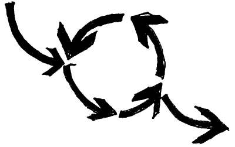
A loop, not a checklist
These six are not boxes you tick once. You run them, look at what actually came back, and go round again – and the last time round happens at the end of the review, not the start.
1Key concepts
Key concepts
Start from the concepts, not from words. Write down the two or three ideas the question really turns on. Every term you will search for is a way of naming one of them, and a concept missing here is missing from every result.
2Keywords or subject headings
Keywords or subject headings
Where the database keeps a controlled vocabulary – MeSH, Scopus index terms, a thesaurus of descriptors – use it. A subject heading catches papers that never once use your word, which is precisely the recall free text leaves behind.
3Alternative keywords
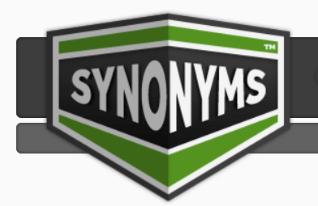
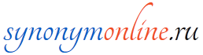
Alternative keywords
The synonyms, the other spelling, the word the other half of the field uses, and the word the other language uses. This is the one step with a real toolset behind it: dictionaries, thesauri, and context engines that show a term actually in use.
4Careful linking
Careful linking
Care in linking the concepts correctly. This is where most queries quietly break: an AND where an OR belonged collapses the set to almost nothing, and nobody ever sees what was removed.
5Regular evaluation
Regular evaluation
Look at what comes back before you scale up. If the first fifty hits are off topic the query is wrong; if a paper you already know should be there is missing, the query is wrong in a way you can name and fix.
6A detailed record
A detailed record
Write the final strategy down exactly as run, with the database and the date. You will re-run it at the end of the review to catch what was published while you worked, and a reviewer can ask you to prove it.
How we actually built a query
One finished Boolean string, and the logic behind every symbol in it.
(“smart cities”OR“smart city”)AND(defense OR defence OR military OR security)
One line, arrived at the hard way
This string is the survivor of a long trial-and-error pass: the team ran term after term and kept the combination that scored best on precision times recall. Nothing in it is a first guess, and every symbol is doing work.
Quotation marks bind a phrase
Without the quotes a database hunts for ‘smart’ and ‘cities’ anywhere in the record, in any order. With them the words are matched as one string, so “smart cities” and “smart city” become two deliberate variants rather than an accident of word order.
OR · either term will do
OR is the forgiving operator
Inside a basket, OR lets any one term stand in for the whole concept: defense, defence, military or security each satisfy that half of the query. The American and British spellings and the near-synonyms all count, so recall grows without the basket losing its meaning.
AND · both terms must be present
AND is what holds precision
The rounded brackets mark two substantive baskets – one on smart cities, one on defense and security. AND between them demands at least one term from each basket, which is exactly what stops a generous set of synonyms from swallowing the precision of the whole query.
NOT · removes a term outright
The operator this query does not use
NOT subtracts a term from the set, and it is a blunt instrument: everything it excludes is gone, including records where the unwanted word turns up once in a footnote. It is the operator to reach for last, and this query never needed it.
Proximity · nested, so a pair can sit near a third term
A fourth operator most people never touch
Nearly every serious platform also carries a proximity operator. ‘a near b’ matches the two terms within a set distance of one another, and the brackets nest, so a pair can in turn sit near a third term. It buys much of the precision of a phrase search without demanding the exact word order.
Where the terms came from
The synonyms did not come out of the air. These dictionaries, thesauri and synonym sites – Russian and English alike – were mined for variants before anything reached the query. That mining is why ‘defence’ and ‘security’ ended up in the same basket.
Boolean: AND
Narrows. Returns only what carries both.
Must be capitalised
In almost every database. Lower-case and is usually treated as a stop word and silently ignored.
It narrows
Every AND you add can only make the set smaller. That is the point, and it is also the risk.
police AND ethics
Returns only the documents that carry both terms – the overlap, not the union.
Boolean: NOT
Excludes. And it is the operator most likely to cost you a finding.
What NOT is for
You reach for it when one term is drowning your results, and in Google the minus sign does the same job. Every database guide draws it exactly like this – a clean slice lifted out of a set. That tidy picture is precisely what makes the operator dangerous.
When the cut is safe
A NOT term has to be domain-foreign. Social security is a different literature that happens to share a word, so the slice takes nothing you wanted. You can check this before you commit: read twenty of the records the NOT term would delete.
When the cut takes your own papers
Criminology is not a foreign literature, it is a cousin: it argues about deterrence in the words you use. Everything in the overlap goes, and because those records are never returned you never find out what you lost. Before cutting a cousin term, read a sample of what it would delete.
Before you type NOT
Ask how far the noise sits from yours – test NOT drug shares vocabulary too.
Boolean: OR
Where recall actually comes from.
Proximity
AND, but only when the words are near each other. Where the baskets scheme comes from.
Two words, one document
A 40,000-word report can carry your two terms forty pages apart and never once put them in the same thought. AND returns it anyway, because AND only asks whether both words occur. That is how a broad query fills up with hits that are technically correct and analytically empty.
AND with a distance limit
Proximity asks the stronger question: are the two words close enough to be about each other? russia NEAR/5 coercion keeps only the documents where they sit within five words. The operator is spelled differently in almost every database, so look yours up before you write the query.
The scheme you will use
((a near b) near c) nests three synonym baskets, not three words: widen one without loosening the rest.
Check it before you build on it
The dangerous case: NEAR/5 gets silently ignored and you get the AND result instead.
Compiling baskets
The project was about Russian (a) international (b) coercion (c).
One basket per conceptual element
The project was about Russian (a) international (b) coercion (c), so it got three lists rather than one long string. A basket holds every way the record might say that one concept. Keeping them apart is what lets you widen one idea later without touching the other two.
Built from the vocabulary, not your preference
Baskets b and c are compiled the same way, out of words the literature actually uses. When recall is thin, add terms to the basket that is starving it.
What proximity actually asks
Any word from basket a near any word from basket b, near any word from basket c. One more synonym in a multiplies across every pairing – build baskets carefully.
The generic scheme
((a near b) near c). The operators sit between the terms being searched, and the brackets decide which pairing is tested first. Not every database implements proximity, so check yours before you design the whole strategy around it.
Search is iterative
Four habits. None of them is optional.
Check items from the first few pages
Open the promising-looking records and the unpromising ones. The promising ones teach you the vocabulary the field actually uses, which is what your next query is built from. The unpromising ones tell you what your current query is dragging in.
Try several items from beyond page 100
This is the one nobody does. Ranking is a model of relevance, not a measurement of it, and the only way to learn whether yours is hiding something is to look where it says there is nothing. If page 100 is as good as page 1, the query is too broad; if it is empty, you have found a floor.
If something looks suspicious, check it
More carefully than feels necessary. A record that sits oddly in the ranking is usually telling you something about your query rather than about itself. Two minutes spent there saves a rerun later.
Try another query
A single query is a hypothesis, not a search. Run, scan, save, refine, run again – and then repeat the whole loop in the next database, because each one indexes a different slice of the record. The vocabulary you picked up on the first pass is what makes the second query better.
Documenting your search
A real search trail, logged variant by variant.
run search
scan results
save relevant results
refine search
The loop, not the lookup
A search is a cycle, not a single act: run it, scan what comes back, save the records worth keeping, refine the wording, run it again. Every turn of that loop changes the query, and a query you cannot reconstruct is a result nobody can check.
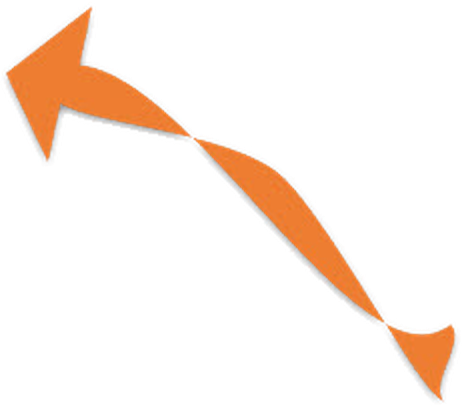
save the search itself
Save the search, not only the hits
The branch most people skip is this one. Saving the result set preserves what you found; saving the search string preserves how you found it, which is the only half a reader can audit or repeat six months later.
repeat in the next database
Then do it all again, elsewhere
No single database holds the field, so the whole loop runs again in the next one. Each platform has its own syntax and its own coverage, so the query is rewritten rather than pasted – which is one more thing the log has to record.
Search log · Google, filetype:pdf · June 2020
“Неправильное восприятие между Россией и Западом”
0 exact-phrase hits · 150 for the looser wording
SNR: top hits are Carnegie Endowment work on Russia–US relations, not on misperception.
“Неверное восприятие между Россией и Западом”
0 exact hits · 3 pages at 50 per page · marked Hidden once assessed
SNR: the first two pages are relevant; the third is culture, psychology, school olympiads.
Write down the query verbatim
A real trail, kept while the search ran. Every variant is recorded exactly as typed, operators intact, so a reader can paste it straight back in.
“Заблуждения между Россией и Западом”
logged and assessed · no separate count recorded
“Искаженное восприятие между Россией и Западом”
around 150 results
Four wordings of one question, each with its date, its count and its read.
Count the hits, then read them
A count on its own proves nothing, so each line carries a short read of what the top hits really were. The trail records the thinking, not just the answer.
A trail, not an anecdote
None of this is bookkeeping for its own sake. Four wordings, four counts and four honest reads are what turn ‘I searched and found some things’ into a method somebody else can run – and a supervisor or a committee will ask for exactly this before they take the result seriously.
The scholarly record on armed forces
A worked example of what ‘broad’ actually looks like.
Over 2 million publications
In the largest bibliometric database, the scholarly literature on armed forces already runs past two million records. That is the pile as it arrives, before a single date range, keyword or document type has been applied to it.
Largest database
2,000,000+
Smallest database
22,404
Drawn to scale: 22,404 is 1.1% of two million.
And 22,404 in the smallest
Put the same question to the smallest of the databases and it answers 22,404. Drawn at the true ratio the smaller answer is a sliver about a hundredth of the length of the larger one. It is also still an enormous corpus: at one paper an hour, eight hours a day, it is roughly twelve working years of reading.
Which number you get depends on whom you ask
Web of Science, Scopus, Dimensions, OpenAlex, Crossref, Semantic Scholar, Lens and Google Scholar each index a different slice of the same literature. The same question put to each of them comes back as a different corpus, so the first methodological choice in any review is which record you are searching at all – not which keywords you use.
Far beyond human absorption capability
Either number is past what one person can read, so the useful question stops being ‘have I read it all’ and becomes ‘how do I slice it’. Everything that follows this week – query building, faceting, mapping, clustering – exists because the honest starting point of a literature review is a literature nobody can absorb.
What is bibliometrics
One record, its metadata, and the same arithmetic at corpus scale.
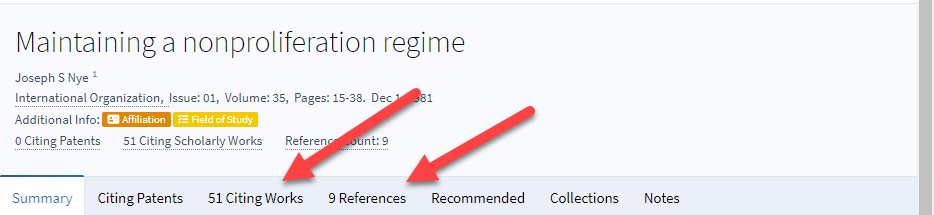
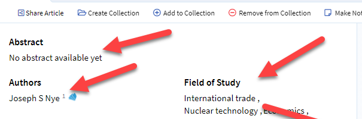
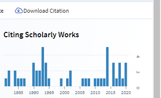
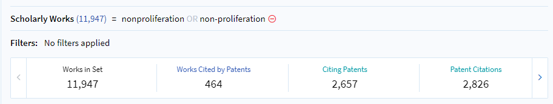
One record, and its fields
This is a single article in Lens.org: Joseph Nye, ‘Maintaining a nonproliferation regime’, in International Organization, issue 01, volume 35, pages 15 to 38, 1 December 1981. Everything under the title is a field rather than prose, including three counts – 0 citing patents, 51 citing scholarly works, 9 references.
What the record connects to
Field of Study is metadata too – international trade, nuclear technology, economics, sovereign state, nuclear weapon, sacrifice, nuclear fuel cycle, presumption, politics – and nobody read the paper to produce that list. The same record carries its own provenance as structured fields too: journal, volume, page range, two publication dates, publisher, and a machine identifier under Sources.
Counted, then charted
Those 51 citations become one bar per year, from the early 1980s to 2020. The chart is not a reading of the paper – it is arithmetic on the paper’s metadata, and it is the smallest possible example of what bibliometrics does.
Now do it to 11,947 records at once
Run the query nonproliferation OR non‑proliferation and the same four fields are summed over the whole result set: 11,947 works in the set, 464 cited by patents, 2,657 citing patents, 2,826 patent citations. Nothing new is being measured, only the same metadata at corpus scale.
Bibliometrics, in one line
A statistical analysis of metadata – titles, abstracts, publication dates, authors, institutions, references and citations – rather than of the text itself. That is its power and its limit in the same sentence: it is what you can do to a literature you have not read, and it never tells you whether any of it is any good.
The Lens – broad
One broad query on armed forces, faceted down to who is actually publishing.
FILTERS
Date Range
Flags
Author
Institution
Institution Country/Region
Identifier Type
Funding
Journal
Conference Name
Document Types
Publisher
Subject Matter
Open Access
Query Tools
New Structured Search
Every field is also a filter
A broad result set is not a dead end, because every metadata field on the record comes back as a facet down the left-hand rail. Date range, author, institution, institution country, funding, journal, conference, document type, publisher, subject matter and open-access status each slice the same result set without re-running the search.
Add New ChartNew DashboardOpen DashboardSave DashboardShare DashboardTwo ColumnsPresentation Mode
Any facet becomes a panel
The toolbar across the top turns a chosen facet into a chart, collects charts into a dashboard, and saves, shares or presents that dashboard. The analysis is assembled from the live query rather than exported and rebuilt in a spreadsheet, so changing the query changes every panel at once.
Armed Forces Institute of Pathology
579
King’s College London
302
Combined Military Hospital
192
Armed Forces Medical College
184
Національний університет …
145
Who actually publishes on armed forces
Facet the broad query by institution and the leaders are military-medical: the Armed Forces Institute of Pathology with 579 records, King’s College London with 302, then Combined Military Hospital at 192, the Armed Forces Medical College at 184 and a Ukrainian national university at 145. The bar under each count is its share of the leader.
United States Department of the Army
136
Uniformed Services University
102
Army Medical College
90
центр воєнно-стратегічних …
89
Harvard University
83
And then it flattens out fast
The second row falls away almost immediately: the United States Department of the Army at 136, Uniformed Services University at 102, Army Medical College at 90, a Ukrainian centre for military and strategic studies at 89, and Harvard at 83. The ten of them together hold 1,902 records.
This is what ‘broad’ looks like
Nobody owns this literature. The leader holds 579 records and the tenth still holds 83, barely a seventh of it, and the list mixes pathology institutes, war colleges, an Ivy League university and two Ukrainian institutions. A broad query is not a failed query – it is the only way to see the shape of a field before you decide which part of it you are going to read.
Bibliometrix
A corpus’s own vital statistics, computed automatically.
bibliometrixbiblioshiny · an R package for science mapping
One package, one export file
Bibliometrix is an R package; biblioshiny is the browser front end it opens for you. You hand it a single export file from The Lens, Scopus or Web of Science and it reads the whole thing at once. Nothing on this slide was typed by hand – every figure here is computed from the records themselves.
Analysis menu
Overview
Main information · annual production
Average citations · three-field plot
Sources · Authors · Documents
Clustering
Conceptual structure
Intellectual structure
Social structure
The whole menu, on one rail
The left rail is the catalog of everything the package will compute for you. Conceptual structure is co-word analysis – it produces the thematic map on the next slide; intellectual structure is co-citation; social structure is co-authorship. Production over time, the most frequent terms and the co-occurrence networks all live behind these same menu items.
Timespan
1819:2023
Sources
10,376
Documents
44,376
Annual growth rate
1.84 %
Main information · the size of the heap
This is the first thing biblioshiny prints, and it is the honest size of the pile before anyone has read a page of it: 44,376 documents drawn from 10,376 different sources, spanning 1819 to 2023, growing at 1.84 % a year. Two minutes’ work tells you what a semester of reading could not.
Authors
59,400
Authors of single-authored docs
19,627
International co-authorship
0 %
Co-authors per document
2.04
Who wrote it
59,400 authors in all, and 19,627 of them appear on a single-authored document, at an average of 2.04 co-authors per paper. That co-authorship figure is a field’s social signature: two is a humanities-and-social-science number, where a laboratory science would return five or ten.
Author’s keywords
4,966
References
183,341
Document average age
17
Average citations per doc
0
What it cites – and what the file cannot say
The corpus carries 183,341 references and 4,966 distinct author keywords, at an average document age of 17 years. Two tiles read zero, international co-authorship and average citations per document, because this particular export did not carry affiliation or citation fields. The tool reports what your file contains, never what the literature contains.
And two more on the same file
Never only one tool
The same export goes into CiteSpace and VOSviewer as well. CiteSpace is built around time – burst detection and cluster timelines; VOSviewer lays out co-occurrence networks with a different clustering algorithm again. Running two of them over one corpus is a cheap robustness check: where they agree you have evidence, where they disagree you have a question worth asking.
The vertical axis is development degree – how elaborate a theme’s own vocabulary is, measured as the density of its word cluster. The horizontal axis is relevance degree, how connected that theme is to everything else. Cut both at the median and each of the four corners means something different for a researcher deciding where to work.
Niche · developed, off to one side
Upper left is high density, low centrality: a worked-out vocabulary that almost nothing else in the corpus talks to. Here that is military medicine – ‘forces medical, medical college, cross sectional’ – with a smaller ‘forces qualification’ cluster beside it. Real specialisms, invisible to the rest of the field.
Motor · developed and central
Upper right is high on both axes: the themes actually driving the literature. The purple cluster is ‘world war, national security, cold war’. The grey one straddling the centrality median is Spanish-language, ‘de la, fuerzas armadas, las fuerzas’ – a reminder that the map is drawn from whatever languages your export contained.
Emerging or declining
Lower left is low on both axes, and a single snapshot cannot tell you which way a theme is moving – which is why the label carries an ‘or’. Two clusters sit here: ‘forces institute, study design, statistically significant’ and ‘revolutionary armed, colombia-farc, peace agreement’. To tell rising from falling you run the thematic-evolution view over successive time slices.
Basic · central, taken for granted
Lower right is high centrality, low density: the field’s common ground. The biggest bubble on the map is ‘armed forces, military personnel, military service’ – everybody uses those terms and nobody has built a specialized vocabulary around them. ‘Mental health, health care, forces hospital’ and ‘armed force, armed conflict, human rights’ sit alongside.
Read it as a research strategy, not a ranking
Motor themes are crowded and hard to add to. Basic themes are where a field is under-theorized, and usually the best place to intervene. Niche themes are where genuinely separate literatures are hiding from each other. And the emerging-or-declining corner is where you need a time slice before you commit anything. None of this was hand-coded: it is the corpus’s own keyword co-occurrence, clustered and projected.
Two ways of looking at the ‘heap’ of knowledge
Same heap, two directions of travel.
The heap
This is the extant knowledge base – every published paper, report and dataset on your question, piled higher than anyone can climb. Five people are working at its base and not one of them will ever read it all.
us → knowledge
Inside-out
From us, the analysts
Towards ‘knowledge’
“What can we get out of this for us?”
Inside-out
You start from your own question and mine the heap for whatever serves it. Efficient, and what deadlines reward – but you only ever meet the literature you already went looking for.
knowledge → us
Outside-in
From ‘knowledge’
Towards us, the analysts
“How can we improve the extant knowledge base?”
The direction few travel
Here the heap sets the agenda: you ask what the field does and does not know, and what your work could add to it. Slower – and the only direction in which knowledge accumulates rather than merely being consumed.
Inside-out
“What can we get out of this for us?”
Outside-in
“How can we improve the extant knowledge base?”
Same heap, opposite direction of travel
Two questions aimed at one pile, and most of us only ever ask the first. This workshop is deliberately built around the second: bibliometrics, taxonomies and knowledge graphs are all ways of asking what the heap itself contains before you decide what to take from it. Ask both, in that order, and the answer to the first gets better too.
LLMs: pros and cons
From the 2025 edition, and still the right ledger.
A broader aperture
To contextualize and frame a policy research question. The deck marks this one as review-critical because it changes what you look at, not just how fast you get through it.
Rapid summarization
Quickly digesting large volumes of publications. It is the least contested claim on the slide, and the one people are least likely to check.
Idea generation
Brainstorming policy options, offering counterarguments, simulating a dialogue between stakeholders. Cheap to generate and cheap to throw away, which is exactly what makes it worth doing.
Drafting support
Versions of briefs, memos and reports in different registers, and the visuals to go with them. Four advantages now sit in the pan, and the beam has tipped.
Hallucinations
Text that sounds plausible and is grounded in nothing. This is the first of the two failures that decide whether your result survives review, so it lands heavy and the beam starts coming back.
Bias
Trained on data that carries societal biases, and perfectly capable of reproducing them in prose that reads as neutral.
No deep reasoning
Excellent at pattern recognition, frequently poor at causal understanding or genuinely complex analysis. Add it to hallucination and the beam still settles left of centre: four real advantages outweigh three real risks – but only for someone who actually checks for these two.
A workflow for bibliographic RAG
Five steps. The fourth is the one people skip.
Define your research question
Everything downstream inherits this one sentence. A vague question produces a retrieval set nobody can audit, and no amount of model quality repairs it afterwards.
Retrieve
Write a query against a bibliographic index, or upload the PDFs you already hold. Which product does the fetching matters far less than what you asked it to fetch.
Analyze and synthesize
Ask your questions against the retrieved context rather than against the model’s memory. The answer can only be as good as the set you handed it.
Review and validate – the valve
Cross-check what the model found against a traditional literature review. The dashed line is what skipping this looks like: unverified claims go round the valve, rejoin at stage five and enter the write-up as though they had been checked.
Document and iterate
Keep the query, the source set and the prompts. Without them the result is not reproducible, and a reviewer has no way of telling whether stage four ever happened.
Tools for bibliographic RAG
The landscape as of the 2025 edition. It moves; the workflow does not.
Built on OpenAI GPTs
Custom GPTs wrapped around somebody else’s bibliographic index. They inherit that index’s coverage and its blind spots, which is the first question to ask of any of them.
Purpose-built for the literature
Designed for the research task rather than adapted to it. They tend to be stronger on citation context and weaker on anything that sits outside their own corpus.
General assistants doing the job
Not built for the literature, and used for it every day anyway. Retrieval depth is the thing to establish before trusting one of these with a search.
Open
OpenScholar is the open-weight entry, which matters whenever you have to say exactly what answered your question. That the band holds one tile is itself worth noticing.
Named for orientation, not endorsed
The half-life of this wall is months: products appear, merge and vanish faster than a syllabus can follow them. The workflow on the previous slide is the line that does not fade, so learn the five steps rather than the eleven names.
Before tomorrow
Day 3 · Wednesday 2 September
Taxonomies
Building an instrument, not a filing system
11:00 – 13:30
LLM uptake across academic disciplines
Guess first: six discipline groups, deliberately left blank. Place each one, out loud, before the next slide gives the real numbers.
The exponential rise
Papers using large language models in political science, 2020–2025
Three years of almost nothing
Four papers in 2020, five in 2021, twenty-four in 2022. On this axis the line is flat against the floor, and that flatness is the honest baseline against which everything after it has to be read.
Then a public chat box
ChatGPT opened to the public on 30 November 2022, and the 2023 count is 467 – nineteen times the year before. Nothing about the method changed; what changed is that any political scientist could now run a large language model without writing a line of code.
The peak: 1,632 in 2024
The 2024 total is 1,632 papers, a 408-fold rise on the four papers of 2020. That is the number worth carrying out of this slide, because it sets the size of the literature you would have to search if you wanted to know what the field has already tried.
And then 668
The 2025 figure is 668, well under half the peak. Whether that is a genuine turn or simply an index that had not caught up when the query was run, this chart cannot tell you – and knowing which of those two it is would change the story completely.
What ‘exponential’ actually means here
The year-on-year multipliers are 1.3, 4.8, 19.5 and 3.5, and then 0.4. Exponential growth means a roughly constant multiplier; this is not that. It is one enormous step in 2023 followed by a settling, which is a different phenomenon and needs a different explanation.
Why a search course starts with this curve
Two thousand eight hundred papers were published on this topic in six years, and almost none of them existed when most of us last learned how to do a literature search. A field that grows this fast breaks the habits that used to work: you can no longer read what is new, ask a colleague what matters, or trust that last year’s reading list still covers the ground. Everything in the next four days is a response to this shape.
True political science: dead last
Share of each domain’s papers that use large language models, 2020–2024
Physical sciences set the ceiling
By 2024 two-thirds of one percent of physical-science papers used a large language model, the highest rate on this chart. That field already had the compute, the code and the structured text formats in place.
Life sciences, a third of the way behind
Biology and its neighbors reach 0.21 % by 2024, about a third of the physical-science rate, and they climb steadily rather than jumping.
Health sciences track them closely
Medicine and public health end at 0.16 %, one step below the life sciences. Clinical text is abundant, but privacy rules and review boards slow down what can be published.
All of the social sciences: 0.10 %
Together the social sciences reach one tenth of one percent, a sixth of the physical-science rate. This is the aggregate political science is usually reported inside, and it flatters us.
Arts and humanities, lower still
The arts and humanities end at 0.06 %, below the social sciences and below every science domain here. Worth noticing before the last line arrives.
And true political science: 0.040 %
Strip out the legal-AI papers that get counted as political science and the real rate is 0.040 %, sixteen times below the physical sciences and below the humanities. The base is 346 papers.
Dead last is a statement about us, not about the tools
Every domain above us works with text at least as much as we do, and several work with far less of it. What separates them is not access to the models, which is free, but a habit of treating a new instrument as something to be tested rather than something to be argued about. The gap is a research-practice gap, and it is the one this week is about. Read from the original figure’s own series values.
One object, and the cuts you make in it
Today is not about filing papers · it is about how you wrap your mind around a topic
What today is actually about
Whatever you study arrives as one undifferentiated object – here, warfare. You cannot hold it in your head whole, and no single list of topics will let you. Today is about the cuts you make in it.
Cut it one way
Slice along the level of war and you get tactical, operational and strategic. Every piece of the object is in exactly one of those three, and nothing has been left out.
Cut the same object another way
Now slice by domain instead: land and sea, air and space, cyber and information. Nothing about the object changed. These are different categories of the same thing, and neither cut is more correct than the other.
And a third
Slice by technology regime – industrial, precision, autonomous. Three independent questions, three sets of answers, all of them true of the same warfare at the same time.
The cells, not the slices
Hold all three cuts at once and you get twenty-seven cells. The lit one is a strategic, cyber and information, autonomous case – a fully specified position, not a label. That cell is what a multidimensional taxonomy gives you and a single list cannot.
Wrapping your mind around a topic is the whole unit
A taxonomy is not a filing system for papers you have already read. It is the set of cuts that turns one unmanageable object into positions you can name, count, compare and search for. The rest of this morning is about deriving those cuts for your own topic rather than borrowing someone else’s – and about testing whether the cuts you got back are any good.
But real topics are not tidy cubes
The same warfare · four things a clean Cartesian product cannot say
Uneven, not 3 × 3 × 3
Dimensions do not arrive with the same number of values, and the values are not the same size. There are orders of magnitude more tactical cases than strategic ones, so the tidy cube quietly implies a balance your corpus will never have.
Correlated, so the cells shear
Autonomous systems cluster at particular levels of war. When two dimensions are correlated the cutting planes stop being perpendicular: some combinations are crowded, others barely exist, and a flat list of categories shows neither.
Curved, because the real boundary bends
Where does cyber stop and information begin? That cut is a surface, not a plane, and cases near it are graded rather than assigned. A taxonomy that pretends otherwise produces its most confident labels exactly where they are least safe.
Ragged, with a hole in it
The solid is not convex, it has a void running through it, and one whole region has nothing inside. An empty cell is a finding: either nobody has studied that combination, or it cannot exist – and which of the two it is, is a research question in its own right.
Start from the cube anyway
Three clean, perpendicular, equal axes are how you get anything at all, and a model will hand you a set in about a minute. The murderboard later this morning is where you find out which of your cuts are uneven, which are correlated, which bend, and which enclose nothing – and that is the step that turns a tidy diagram into an instrument you can actually measure with.
What are ontologies and taxonomies?
Both organize knowledge. One says what a thing is; the other says what it does.
A taxonomy classifies
It sorts concepts into a hierarchy and asserts one kind of link: is-a. A tiger is a carnivore, a carnivore is a mammal, a mammal is an animal. Everything else you know about a tiger has nowhere to live in this structure.
Like a library classification
Every book gets exactly one shelf, and the shelf is chosen by subject. Physics sits with physics. That is an excellent way to find a book when you already know which subject you want – and no help at all otherwise.
An ontology relates
It keeps the is-a backbone and adds typed relationships between concepts: rules, attributes and connections describing how elements interact. A tiger preys on deer. A tiger’s habitat is the jungle. The label on the edge is itself knowledge.
Like a knowledge graph
Now the books are linked not only by category but by content, themes and authors. A question can travel along those links instead of stopping at the shelf. That is the difference between finding a document and following an argument.
Both layers, in one live system
PubTator3 publishes exactly these two tables. The first maps entity types onto standard terminologies – that is the taxonomy. The second names twelve relation types with which any two entities can be connected – that is the ontology, and it is where the biology actually is.
Why they matter for cumulative knowledge
Progress depends on building on previous findings rather than rediscovering them.
Structuring information
A common language for concepts is the slab everything else rests on: one name per thing, stated once, so ambiguity is removed rather than argued about. BioPortal is what that looks like when a field actually builds it – 1,149 ontologies, 15,665,240 classes and 99,561,419 mappings between them, in biomedicine alone.
Facilitating discoverability
Once work is classified against a common scheme it can be retrieved and compared without reading all of it first. That is what stops a field quietly re-running the study it already has. This floor only stands because the slab under it does.
Enabling interdisciplinary research
An ontology names the relationships between fields, so a term that means one thing in sociology and another in epidemiology can be mapped instead of confused. Researchers stop having to agree on words before they can compare findings.
Supporting machine learning
Many AI systems rely on structured knowledge representations to interpret data, recognize patterns and generate new hypotheses. Bolt a model onto a field with no shared structure and it inherits that field’s ambiguity, at speed.
Where the slab is missing
In biology the Gene Ontology keeps gene functions described consistently across species and studies. In astronomy stellar classification standardizes how types of star are described. In the social sciences terms like power and institutions are used inconsistently, so nothing stacks and the studies stay fragmented.
Patchy scientific uptake
Some fields built the instrument. Ours did not.
Biology and medicine
Gene Ontology, SNOMED CT and ICD give research and clinical practice a structured language. Three named, maintained standards, each with an owner and a release cycle, so a finding written against one of them is still readable a decade later.
Computer science and AI
Ontologies here are load-bearing infrastructure rather than documentation: they power knowledge graphs, semantic search and expert systems. The Semantic Web and WordNet are the reference cases.
Linguistics, astronomy and physics
FrameNet and Universal Dependencies do it for language; Harvard stellar classification does it for celestial objects, and comparable schemes exist for particles and phenomena. Different subject matter, same instrument.
Social sciences
The vocabulary exists and the standard does not. Power, identity and institutions are used inconsistently across studies and even across subfields of one journal, so two papers can agree in words and disagree in fact.
International relations and political science
There is no rigorous taxonomy for geopolitical strategies, military doctrines or diplomatic norms. This is our own field, and the row is empty, which is the reason this workshop exists.
History, humanities, economics
Classification is informal and subjective, decided paper by paper. Even macroeconomic concepts like inflation expectations lack standard definitions across models, which is why two forecasts can be incomparable rather than merely different.
Why some fields lag
Three reasons are usually offered, and the third is the one you will hear in this room. It is an argument, not an excuse: context-dependence explains why a rigid scheme fails, and says nothing about why a careful multi-dimensional one would.
Multidimensional taxonomies: an analogy
One lizard head · bones first, soft tissue second · three reconstructions · the categories you can name depend on which axis you look along
DECT
Hydroxyapatite map
Bone first: the skeleton axis
This is a dual-energy CT reconstruction of a single lizard head, read out for hydroxyapatite, the mineral in bone. Soft tissue all but disappears, and the skull roof, the quadrate and the mandible are already nameable from this axis alone.
Iodine map
Soft tissue second, same scan
The identical acquisition, now read out for iodine instead of hydroxyapatite. The skull fades and the brain, the eye, the tongue and the jaw muscles appear – two categories of thing, from one measurement, because two different questions were asked of it.
TV–TGV
Hyperspectral
A third axis: how the data were reconstructed
The middle column is a hyperspectral scan of the same head, reconstructed with a TV–TGV algorithm. Every one of the structures just named on the DECT column is findable here too – the specimen and the material question have not changed, only the mathematics that turns measurements into an image.
FDK
Same data, weaker algorithm
The right-hand column is the identical hyperspectral data run through a standard FDK reconstruction. It is noisier and the boundaries between structures blur. Change the method and you lose the ability to name the smaller parts at all.
Why this is the analogy for a multidimensional taxonomy
A one-dimensional taxonomy is a single panel: one material basis, one reconstruction, one list of things you are able to see. A multidimensional taxonomy is the whole grid – the same objects classified along several independent axes at once, so that a category invisible on one axis shows up on another. When we later ask a model to tag a corpus by domain, level, intent, severity and geography at the same time, this grid is the shape we are asking for.
The taxonomy generation prompt
What you are asking for, before you ask for it – illustrated with the framework’s own example dimensions.
Not the usual thing
Traditional hierarchical taxonomies organize concepts along a single dimension: one parent, one path down, and every question has to be asked in that one order. Complex phenomena do not sit still in a single line.
A multi-dimensional taxonomy
What you are asking for is a framework for analyzing a complex domain through multiple independent analytical perspectives, each a fundamental way of looking at the subject. Independent is the load-bearing word: moving along one axis must tell you nothing about where you sit on the others.
HLTP, illustrated by the framework itself
High-Level Taxonomic Principles are those axes. It is our own term, so it is worth saying slowly: an HLTP is simply an independent way of looking at the thing. Temporal, geographical, power application is not a taxonomy of any one corpus yet – it is the MDTDF prompt’s own textbook illustration of what an HLTP looks like, before it is ever applied to a real domain.
Second and third level
Each principle divides into its major divisions, and each of those into the specific operational areas beneath it. Levels two and three are subdivisions within one axis and never cut across another – that is what keeps the axes independent.
Taxa
A taxon is a concrete instance, and it gets a reading on every dimension at once rather than a single address in a tree. That is what the extra axes buy you: two cases can be compared on time, on geography and on how power is applied, separately.
The MDTDF prompt, componentized
The working framework document itself – run throughout on one worked example: policing operations.
Phase 1 · Initial Dimension Identification
Begin by drawing a hard boundary around what you are analyzing, then throw a wide net for candidate dimensions: pure brainstorming, existing frameworks pulled from the relevant literature, domain experts who work the field daily, and a first-principles pass asking what fundamentally defines it. Each of the five steps – domain definition, brainstorming, literature review, expert consultation, first-principles analysis – surfaces dimensions the others would miss on their own. Nothing here has to survive scrutiny yet; the goal is volume and variety of candidates before Phase 2 starts cutting.
Phase 2 · Dimension Refinement
This is where the candidate list gets tested, not just tidied: independence testing checks whether a dimension can move while the others stay put, and a classification exercise runs diverse real examples through every candidate to see if it actually holds up. Gap analysis looks for aspects the current dimensions still miss; redundancy elimination merges or drops any two that turn out to be the same thing wearing different names. Only once a dimension survives all of that does it get a clear, final definition. This is the phase that decides which candidates are genuinely independent – not Phase 4, where it would be too late to fix.
Phase 3 · Second-Level Development
With the HLTPs themselves settled, this phase builds what sits inside each one: division identification names the major components of a dimension, and a mutual-exclusivity check makes sure those components do not overlap each other. Completeness verification asks whether the divisions cover every possibility within that dimension, each one gets a clear definition, and boundary testing runs edge cases to see where a category actually stops. It is the same discipline as Phase 2, just one level down – from testing whole dimensions against each other to testing the categories inside one of them.
Phase 4 · Testing and Validation
The taxonomy now has to survive contact with reality: real-world testing runs it against diverse actual examples, and edge-case analysis specifically hunts for the unusual or complex cases that break categories quietly. Expert validation brings domain specialists in to critique the whole structure, and a practical application test uses it for the job it was built for and checks whether the results are actually useful. Whatever that testing turns up feeds a refinement iteration – adjusting dimensions and categories rather than treating the taxonomy as finished. Validation is not a formality here; it is the phase that catches an independence failure Phase 2 let through.
Now build one for your own topic
The whole prompt, three lines you write, and two models that must not see each other.
the full prompt · one page, one copy button
1 · Get the prompt
Scan it. You get the whole framework – every phase, every criterion, the output contract – on one page with a button that copies the lot. Nothing to remember and nothing to retype.
DOMAIN
what is this a taxonomy OF, and where does it stop?
INSTANCE
the single thing you classify – an issue, an event, an argument
APPLICATION
the corpus you will actually run it over
2 · Fill in three lines for YOUR topic
The DOMAIN block at the end is the only part you write. The hard one is INSTANCE. If you name a document, a chapter or a paragraph, you will get a taxonomy of your sources’ filing system instead of your subject.
✗ no dimensions are supplied to the model
3 · Do not hand it the answer
The prompt deliberately contains no candidate dimensions. If you suggest them, the model will agree with you and you will have learned nothing about your domain. Let it derive them.
model A
blind
model B
4 · Run it twice, blind
Two models, neither seeing the other’s output. Where the two taxonomies disagree is where your domain is genuinely contestable. That disagreement is a finding, not a defect – and it is what you murderboard next.
Bring both taxonomies to tomorrow
Day 4 runs a real corpus through a real taxonomy and measures how well it worked. It works far better with yours than with mine.
The taxonomy prompt, murderboarded
One prompt, two models generating blind, and an argument between them.
The murderboard
Two models argue over frozen bytes until both sign off – or the disagreement is the finding.
You – the author – cannot be one of the two reviewers – that GO is a self-assessment, and no checker can tell the difference. Naming the arrangement is the requirement.
And how to test the dimensions you get back
Five criteria, drawn as the failure each one catches. A dimension that fails one of them is not a dimension.
Independence
Plot your cases on two of the dimensions at once. If they fall on a line you have one dimension wearing two names, and the second one is costing you work for nothing.
Universality
Every instance in the domain has to land somewhere on the dimension. One case with no plausible position on it is enough to disqualify the dimension outright.
Fundamentality
The dimension has to cut at something the domain actually turns on, not at a surface feature that happens to be easy to observe and easy to record.
Distinctiveness
If a dimension re-describes what another one has already told you, the scheme has grown without seeing more. Ask what only this axis can show you.
Utility
A dimension can be independent, universal, fundamental and distinct and still be inert. It has to change a reading, an argument, or a decision you would otherwise make.
Where the candidates come from
They are not guessed. Candidates come from five places at once – the domain boundaries you set, brainstorming from several perspectives, frameworks already in the literature, domain experts, and first principles – and then all five gates run on every one of them. Independence is the gate most of them leave at.
Framing research questions with taxonomies
One HLTP, four verdicts on legitimacy, eight leaves paired with real cases.
9 · Perceived Legitimacy of EnmityTaxonomic Principles for Framing Enemies in Public Discourse
One HLTP, four ways to frame legitimacy
This branch of a Day 3 taxonomy sorts every pairing of adversaries by how legitimate the enmity reads to an outside observer – from clearly justified to purely subjective framing. Four branches, each cashed out as matched pairs of real conflicts.
9.1
Justified
9.1.1 Self‑Defense– Israel vs. Hamas (rocket attacks) · India vs. Pakistan (cross‑border terrorism)
9.1.2 Moral Imperative– US vs. Nazi Germany (WWII) · Rwanda vs. Genocide Perpetrators
Justified: self-defense and moral necessity
Israel/Hamas and India/Pakistan read as defensive responses to attack; the US against Nazi Germany and Rwanda against genocide read as moral necessity – two different grounds for the same verdict, which is itself a testable claim.
9.2
Partially Justified
9.2.1 Disputed Claims– China vs. Taiwan (sovereignty) · UK vs. Argentina (Falkland Islands)
9.2.2 Retaliatory Actions– US vs. Iran (Soleimani strike) · Israel vs. Palestine (settlements)
Partially justified: disputed claims and retaliation
Sovereignty disputes (China/Taiwan, the Falklands) and retaliatory strikes (the Soleimani killing, West Bank settlements) sit in a grey zone where legitimacy depends on which side's account of events you start from.
9.3
Unjustified
9.3.1 Aggression– Russia vs. Ukraine (Crimea annexation) · Iraq vs. Kuwait (invasion)
9.3.2 Human Rights Violations– Myanmar vs. Rohingya (ethnic cleansing) · Syria vs. Civilians (chemical weapons)
Unjustified: aggression and rights violations
Crimea and the invasion of Kuwait are framed as straightforward aggression; Rohingya and Syrian civilians as rights violations against a population. Both land as unjustified, but for different reasons – territory taken versus people harmed.
9.4
Subjective
9.4.1 Nationalist Narratives– China vs. Japan (WWII grievances) · Balkans (ethnic conflicts)
9.4.2 Propaganda & Misinformation– US vs. Iraq (WMD claims) · Russia vs. Ukraine (…cut off in the source screenshot)
Subjective: narrative does the work
Nationalist grievance (China/Japan, the Balkans) and propaganda (WMD claims, disinformation) are legitimacy claims that live entirely in how the story is told, not in a verifiable fact about the conflict itself.
The table itself is eight research questions
Every leaf pairs a claim with two real cases: does the claimed ground hold up symmetrically across both members of the pair, or does the frame flip depending on whose account you take? That pairing is what ‘framing research questions with taxonomies’ means.
Engaging LLMs a level higher
Same prompt, run twice – two overlapping but different instruments come back.
Prompt (verbatim): “Can you give me 10 high-level taxonomic elements based on which we can differentiate between the different ways in which different scholars and experts describe the main threats that Russia poses to the Western alliance? Give me a numbered list with JUST the 10 HLTEs and their taxa between rounded brackets right behind each of them.”
Ask for the instrument, not the answer
The prompt never asks ‘what are Russia’s threats to the West’ – it asks for the ten dimensions along which any answer could be sorted. Not ‘answer my question’ but ‘help me build the instrument that answers it’.
Attempt 1
1.Threat Domain – Military, Economic, Cyber, Political, Information
2.Geographic Focus – Regional, Global, Specific Countries
10.Impact on Alliance Cohesion – Divisive, Unifying, Neutral
Attempt 1: ten dimensions
Domain, geography, time horizon, nature, objective, vector, intensity, response, motivation, alliance cohesion – a first cut at the instrument, generated from nothing but the question.
Attempt 2
1.Domain of Threat – Military, Economic, Political, Informational, Cultural
2.Nature of Threat – Direct, Indirect, Hybrid, Asymmetric, Existential
3.Level of Threat – State, Non-State, Individual, Systemic
4.Intent of Threat – Offensive, Defensive, Coercive, Disruptive
5.Geographic Scope of Threat – Regional, Global, Specific Allies
6.Temporal Scope of Threat – Immediate, Short-term, Long-term
7.Severity of Threat – Low, Medium, High, Critical
8.Probability of Threat – Low, Medium, High
9.Vulnerability of the West – Military, Economic, Political, Social, Technological
Same prompt, same model, a second run – and only about half the list matches. ‘Nature of Threat’ and the domain/scope/severity family recur, but ‘Policy Recommendations’ and ‘Underlying Motivation’ exist on only one side.
The instrument itself needs adjudicating
Two runs of one prompt produced two overlapping but non-identical instruments. That is exactly why the next slide compares outputs across models rather than trusting any single generation – the taxonomy an LLM hands back is a draft, not a deliverable.
Comparative analysis across models
One prompt, three models, twelve categories, four of them unanimous.
Risk category
Drug TraffickingHuman TraffickingCybercrimeMoney LaunderingCorruption and Political InfluenceArms TraffickingEnvironmental CrimeExtortion and FraudCounterfeit GoodsOrganized Sports BettingWeapons TraffickingFinancial Crimes (Broadly)
twelve pooled from three replies
?
?
?
One question, twelve candidate answers
Each model was asked the same thing, on its own: which organized-crime risk categories does this corpus need? Pooling the three replies gives twelve categories. Not one model produced all twelve, and nothing in any single reply says so.
ChatGPT-4
10/12
ChatGPT-4: ten of the twelve
A long, conventional list – trafficking in drugs, people and arms, cybercrime, laundering, corruption, then environmental crime, fraud, counterfeiting and sports betting. Read on its own it looks complete, which is exactly the problem.
Smaug
10/12
Smaug: also ten, and not the same ten
Nine overlap. It drops Arms Trafficking and adds Weapons Trafficking – the same category under another name, which a mechanical tally scores as two disagreements instead of none. That one row is why a comparison has to be read, not counted.
Qwen2
5/12
Qwen2: five, one of them new
Half as many categories. It keeps the four the others both name, drops laundering, environmental crime, fraud, counterfeiting and betting, and adds Financial Crimes (Broadly) – a parent category that swallows two of the rows it just dropped.
Agree
333231222211
4/12
Rows by how many models named them
all three4
two of three5
one only3
Four rows out of twelve are unanimous
Drug trafficking, human trafficking, cybercrime and corruption are the only rows all three models mark. Five rows rest on two models, three rows on a single one. That column on the right is your real confidence measure, and it is far weaker than any one answer looked.
Compare, then adjudicate – do not average
The move is not the union, not the intersection, and not a majority vote. It is to sit with the twelve rows, merge Arms and Weapons Trafficking, decide whether Financial Crimes (Broadly) is a category or a parent of two you already have, and write down why you decided it. The models generate candidates; the scheme stays yours.
A worked taxonomy: Russian policy in the Caucasus
One prompt, ten high-level taxonomic elements · two per click.
The entire input
“Can you now give me 10 HLTEs (in the same tabular format) that would allow me to ‘structure’ all key issues pertaining to Russian policy towards the Southern Caucasus?”
One sentence in. A coding frame out.
No schema, no examples, no seed list – and the reply is not an answer but a frame: ten high-level taxonomic elements you can argue with, cut, or hand straight to a corpus. That is a different use of a model than asking it a question.
01
Geopolitical Objectives
02
Security & Military Posture
Ends, and the hard instrument
The model starts where an analyst would: Russia’s strategic interests in the South Caucasus – regional hegemony, security buffer zones, and competition with the EU, NATO, Turkey, Iran and China. Directly under it sits the hard instrument: military presence, CSTO ties, peacekeeping deployments, arms sales and hybrid warfare.
03
Political Influence & Regime Preferences
04
Economic & Energy Policy
The levers inside the three states
Support for – or subversion of – governments, pro-Russian elites, influence operations, and reaction to political change in Georgia, Armenia and Azerbaijan. Beside it the material lever: energy dependence, trade, sanctions, and investment in pipelines and transport corridors.
05
Ethnic & Religious Dynamics
06
Conflict Mediation & Frozen Conflicts
Identity, and the frozen conflicts
Ethnic and religious dynamics covers minorities, Orthodox Church influence, and the management of Muslim populations in the North Caucasus. Its neighbor is the element the region is known for: Russia’s role in mediating – or sustaining – Abkhazia, South Ossetia and Nagorno-Karabakh, and the leverage that mediation buys.
07
Soft Power & Cultural Influence
08
Legal & Diplomatic Posture
The cheap instruments, and the legal cover
Language, media, educational institutions and historical narrative on one side; international law, recognition of breakaway regions, and UN and OSCE negotiation on the other. Together they are the part of the toolkit that costs the least and gets measured the least.
09
Infrastructure & Connectivity
10
Threat Perception & Strategic Adaptation
Wires, roads – and the element that governs the rest
Transport corridors, the North-South route, Belt and Road links, telecom and digital influence. And last, the element that conditions all nine others: how Russia perceives threats from NATO enlargement, Turkish influence, Western-backed democratization and local nationalism – and adapts to them.
Ten elements, and not one of them is wrong. That is the problem.
A plausible list arrives in seconds, which is exactly why it has to be attacked before it is used: what is missing, what overlaps, what is a category and what is only a topic. A taxonomy you did not argue with is a taxonomy you did not build.
A worked taxonomy: Regeneration
Regeneration of the Russian armed forces · eight top-level elements, one per click.
Comparisons &Lessons Learned
Comparisons to NATO & Other Militaries
Historical Comparisons
Open Comparisons Subcategory
Comparisons & Lessons Learned
Benchmarking is how most commentary about the Russian armed forces actually argues, so it gets a branch of its own rather than being folded into the substance. Two children carry it: comparison against NATO and other militaries, and comparison against Russia’s own past.
Industrial &Economic Base
Defense Production Infrastructure
Economic Constraints & Budgeting
Open Industrial & Economic Subcategory
Industrial & Economic Base
Can the country build back what it is losing? Defense production infrastructure sits beside the budget and the constraints around it, because almost every claim about whether attrition is sustainable is really a claim about one of those two.
Societal &Political Support
Domestic Propaganda & Media Control
Political Elite & Leadership Cohesion
Open Societal Support Subcategory
Societal & Political Support
Regeneration is not only materiel. Domestic propaganda and media control on one side, and the cohesion of the political elite on the other, decide whether losses can be absorbed politically at all – which is a different question from whether they can be replaced.
Doctrine &Tactical Adaptations
Adaptive Learning Mechanisms
Conventional vs. Hybrid Approaches
Open Doctrine & Tactics Subcategory
Doctrine & Tactical Adaptations
What the force is learning, and how fast. Adaptive learning mechanisms sit next to the conventional-versus-hybrid question because the same corpus argues both that Russia adapts quickly and that it structurally cannot. A taxonomy has to be able to hold both claims.
Logistics& Sustainment
Maintenance & Repair
Supply Lines & Infrastructure
Open Logistics Subcategory
Logistics & Sustainment
The least glamorous branch and the one that decides campaigns. Maintenance and repair sit beside supply lines and infrastructure – between them they are the difference between equipment that exists and equipment that runs.
Technology &Equipment Innovation
Drone & Electronic Warfare Programs
Tank & Vehicle Modernization
Open Technology Subcategory
Technology & Equipment Innovation
Drones and electronic warfare on one side, tank and vehicle modernization on the other. Keeping them apart matters: the first is where the war actually moved, the second is where the inherited force still is, and collapsing them hides the gap.
Future Outlook& Sustainability
Long-Term Modernization Pathways
Potential Escalations & Further Mobilizations
Open Future Subcategory
Future Outlook & Sustainability
The forward-looking branch: long-term modernization pathways, and the possibility of further escalation or mobilization. It is the element that makes the corpus answer a question rather than only describe a state.
Manpower& Morale
Recruitment & Conscription
Training & Professionalization
Morale & Retention
Open Manpower Subcategory
Manpower & Morale
Four children, more than any other branch: recruitment and conscription, training and professionalization, morale and retention, plus its own open slot. People are the constraint that everything else in this diagram eventually runs into.
Eight elements, twenty-five children – and an open slot in every branch
Every branch ends in an open subcategory: the slot where anything the scheme did not anticipate is parked instead of quietly dropped. That is the difference between a working taxonomy and a tidy diagram. Over a million annotated chunks came out of this one.
Deterrence: the classics
Ten documents, 1958–1989 · the canon a whole field still cites.
Brodie · 1958
The Delicate Balance of TerrorRAND paper P‑1472
Wohlstetter · 1958
Snyder · 1961
It starts as paperwork, not scholarship
Deterrence theory was not born in a university. Brodie’s The Anatomy of Deterrence is a RAND research memorandum dated 23 July 1958, and Wohlstetter’s The Delicate Balance of Terror was a RAND paper a year before it was famous. Snyder’s Deterrence and Defense is the first attempt to turn that in-house reasoning into a theory.
Kahn · 1962
Schelling · 1966
The two everybody can name
Kahn made nuclear reasoning public and notorious; Schelling gave the field the words it still uses – compellence, commitment, the threat that leaves something to chance. Ask this room who has read either one cover to cover. In most rooms the honest answer is nobody, and the citation counts do not care.
Ellsberg · 1968
Morgan · 1977
Freedman · 1981
Coercion, then codification
Ellsberg’s typescript states deterrence plainly as extortion. Then the field turns on itself: Morgan asks what the word actually means, and Freedman writes the history of the strategy instead of more of it. A literature that starts writing its own history is a literature that has stopped growing.
Jervis, Lebow & Stein · 1985
Jervis · 1989
The critique from inside
Jervis, Lebow and Stein put the rational deterrer under a psychologist’s lamp and it does not survive intact. Jervis then argues the weapons changed the logic itself. After 1989 the shelf stops; the citing does not.
Ten works. Thirty-one years. And still the whole field.
Alexander George and Richard Smoke’s 1974 volume is not even on this shelf, and it is cited as often as anything on it. That is not a reading problem, it is a method problem: a literature nobody has actually mapped ends up represented by whatever everyone already quotes. The rest of this week is about mapping it instead.
Deterrence’s hyponyms
Snyder’s two mechanisms, drawn the way Art set them out in 1980.
One word, doing a family of jobs
Deterrence is a hypernym – the broad term a field reaches for before it knows what it is measuring. Everything below it here is a hyponym, a narrower word coined because the broad one would no longer carry the claim. Nobody designed that hierarchy; it accreted.
By denial – work on the options
The first hyponym operates on what Red is able to do. Blue makes the non-compliant course of action fail on its own terms, so the message is “don’t even try, because it will not work.” Nothing has to be threatened, because nothing is being priced.
By punishment – work on the price
The second hyponym leaves Red’s options exactly where they were and changes what they cost. Blue threatens a consequence Red is not willing to pay, so the message is “do that, and here is what it costs you.” The option survives; only the expected payoff moves.
How to read the two timelines
Each panel runs left to right across four time steps, between the line marking what Red wants and the line marking what Blue wants. The three arrow styles separate Red’s actions from Red’s options from Red’s decisions, and the bolt is the moment Blue intervenes. On the original slide those four labels were printed on top of one another and could not be read at all.
Denial intervenes early, on the option
Blue arrives at t⁺¹, before Red has committed to anything, and removes the option. Red’s climb toward what Red wants is cut off in mid-air, and the trajectory that survives is the one running along what Blue wants. Nothing was threatened and nothing was punished.
Punishment intervenes late, on the decision
Here Blue lets Red depart. The dashed arrow rises away from the Blue-compliant line at t⁺¹, Blue’s bolt lands at t⁺² once the departure is real, and the dotted arrow is Red’s decision to come back down. The same word is doing two different jobs, at two different moments, against two different objects.
The vocabulary was already a taxonomy
Denial and punishment are only the first fork. The field went on to add general and immediate, central and extended, and lately cross-domain, entanglement and normative taboos – each one coined at the moment the broader word stopped carrying the claim. That is a taxonomy built by accretion rather than by design, which is precisely why a keyword search on the hypernym alone misses most of its own literature.
extendedimmediategeneralcentralcross-domainby entanglementby norms and taboos
Mapping the knowledge landscape
All 349 subject categories a citation database returns for “deterrence”, at true area.
The field you think you are searching
Sociology and Political Science returns 2,483 documents and Political Science and International Relations another 2,297. Between them that is more or less everything most of us would call the deterrence literature. Watch how much of the map they actually cover.
Two neighbors you did not plan for
Law is next with 2,146, and General Medicine at 2,073 is barely smaller. Deterrence is a working term in criminology and sentencing, and in health research it covers everything from vaccination messaging to infection control. Neither would appear on a security-studies reading list.
And then it is a biology word
Ecology, Evolution, Behavior and Systematics contributes 1,766 documents and Insect Science another 1,039, with Economics and Econometrics at 1,383 in between. Predator deterrence, aposematic signaling and crop-pest deterrence are the same word, and the animals were doing it first.
The tail is most of the map
These are the other 342 subject categories, drawn at the same true area as the seven already named. Almost none of them can carry a legible label at this size – which is exactly what the original figure looked like – and together they are more of the map than everything above.
What the unreadable tiles actually are
The largest of them run from Biochemistry at 613 down through Aquatic Science at 508, and the sequence keeps going: Pathology and Forensic Medicine 440, Plant Science 416, Finance 393, History 367, Social Psychology 354. A picture you cannot read is not evidence that there is nothing in it.
About one document in eight
The two political-science categories together are 4,780 of roughly 37,000 documents on this map. A search scoped to your own discipline is not a narrow search – it is a search that never sees seven eighths of its own subject, and never finds out what it missed.
Mapping is a separate step from searching
This is not an argument that entomology belongs on your reading list. It is an argument that you cannot know what to exclude until you have seen the whole distribution, and that mapping the landscape is a prior, separate operation from querying it. Every count on this slide was read off the original figure; the 37,000 total was recovered from tile area, a method that reproduces every printed count on the original to within 3 %.
Four layers of deterrence scholarship
Four cuts through one corpus – and only three of them a database can make.
Deterrence, broad
The outermost layer is everything the word returns, in every discipline – the map on the previous slide. Insect Science 1,039, Ecology 589, Aquatic Science 508 and Plant Science 416 all sit inside it. That is real scholarship on deterrence, and almost none of it is about states.
Deterrence between people
Narrowing to deterrence among humans rather than among organisms drops the biology and keeps the largest categories on the whole map: Law 2,146, General Medicine 2,073, Public Health 554, Education 290. Criminology and medicine are the center of gravity here, not security studies – and a subject filter can still make this cut for you.
Deterrence in international security
This is the layer most people in the room mean by the word: Political Science and International Relations 2,297, Sociology and Political Science 2,483, Strategy and Management 306. Together they are about 14 % of the broad layer, and this is the last cut a database facet can make on its own.
And then the layer no database knows
The innermost ring has no subject facet, no journal set and no controlled vocabulary behind it. Nothing in a citation index knows what Russian deterrence thinking is, so that boundary has to be built – by query, by term mining, by reading and by argument. Constructing it is the actual research, and it is where a taxonomy stops being decoration.
The circles are not to scale, and it matters
The original slide said so, and it is worth repeating in the deck’s own words: these radii are notional. Drawn honestly, as in the small pair at the left, the international-security layer is about a seventh of the broad one by document count, and the Russia layer is a fraction of that again that nobody has ever counted. A notional picture is fine as long as nobody reads areas off it.
Why the layers are the method, not the illustration
Each ring is a decision about what counts, and three of the four can be handed to a database while the fourth cannot. Naming all four in advance is what stops the innermost one from being defined after the fact by whatever the search happened to return – which is the difference between a corpus and a pile. The counts here are the Scopus subject totals from the map on the previous slide; the innermost layer deliberately carries none, because there is none to carry.
Animal deterrent strategies
Deterrence is not an IR invention. Ethology sorted it into kinds a century ago – and the kinds are sharper than ours.
Startle and bluff
A caterpillar flashes an eye that is not an eye, an assassin bug rears up to twice its height, a lizard snaps open a collar it will never use in a fight. None of these animals can win the contest they are advertising. The display works only because the predator cannot afford the cost of testing it – deterrence by threat, with no capability behind it.
Armament you can verify
Quills and antlers are expensive to grow, impossible to fake and visible from a distance: here the threat is the capability. The dog on the right is what a predator gets for discounting the signal. Ethologists have separated the bluff from the armed threat as a routine matter for a century; strategic studies took decades to draw the same line.
Aposematism – the honest warning
Red, yellow and violet are a published claim of toxicity, learned by a predator once and remembered for life. The signal survives only because most animals wearing it really are dangerous, which makes aposematism a running experiment in credibility – the same problem, under a different name, that occupies half the deterrence literature.
Numbers, and mobbing
A bait ball, a crow mob, a musk-ox ring and a buffalo herd all deter collectively rather than individually: no member is defended, the formation is. It is the closest thing in nature to an alliance, and it fails the way alliances fail – the moment enough members decide the cost belongs to somebody else.
Why this is in a research-methods workshop
Every category on this slide – startle, armament, warning color, collective defense – was named, measured and argued over by ethologists long before strategists borrowed any of it. Reading one field outward into another is not decoration; it is where a sharper taxonomy comes from, and it is the single cheapest thing you can do to your own literature review. The book in the corner is Chris Barnard’s Animal Behaviour: Mechanism, Development, Function and Evolution, where most of these terms are defined properly.
The declining utility of instrumentalizing ‘fear’
Seven institutions that used to run on fear, and what each of them runs on now.
For most of our existence, fear
For almost all of the human past, fear was not a technique anyone chose – it was the background condition of being alive, and every institution that wanted compliance simply drew on it. Seven of those institutions are on the left. Watch what each of them runs on now.
In the family
Sweden made hitting a child unlawful in 1979 and dozens of states have followed. Within two generations the household went from an institution that ran on the credible threat of pain to one that negotiates, explains and withdraws attention instead.
In education
Corporal punishment was abolished in British state schools in 1987 and across essentially all of Europe. What replaced it – continuous assessment, feedback, streaming – is not gentler in its effects, but it does not work by frightening anyone.
On the workfloor
Nobody legislated this one away; it simply stopped paying. Dismissal and public humiliation were replaced by pay design, engagement surveys and the language of psychological safety, because a frightened knowledge worker is a bad knowledge worker.
In public health
The mutilated-lung poster is still around, but it has been overtaken by nudges, defaults and harm reduction. The evidence turned against fear appeals: they get attention and then get avoided, which is the worst combination a campaign can buy.
In religion
Hellfire preaching has not vanished, but as a mass instrument in the West it has collapsed. The congregations that grow now offer belonging, service and community; the ones still leading with damnation are losing members fastest.
In criminal justice
The death penalty is now abolished in law or in practice in around three quarters of the world’s states. Sentencing runs on tariffs, parole and rehabilitation instead – on a finding repeated for fifty years: certainty of detection deters, severity barely does.
In policing
The least finished of the seven, and the most contested. Procedural justice, body cameras and de-escalation all rest on one claim: compliance bought by fear is brittle, compliance bought by legitimacy is not.
Fear today
The salience of fear has been decimated across every one of these domains, and in none of them was the replacement softer – it was smarter. That is the finding that only becomes visible from the broad view: not that we stopped wanting compliance, but that we found instruments that buy it more cheaply and hold it longer. Any theory of deterrence that has not noticed is working from a model of the human being that the last two generations retired.
The independence test
A taxonomy is only an instrument if its dimensions are actually independent.
Can a case score high on A and low on B?
Two dimensions are independent only when the cases actually fill the plane. If everything high on A is also high on B, you have drawn one axis twice and named it twice.
Does every taxon have a plausible negative case?
If nothing in your corpus could fail to qualify, the taxon is not measuring anything. For each one, name out loud a case that plausibly falls outside it, before you classify.
Would a second coder assign the same label?
Hand the scheme to someone else and have them label the same passages. Where the two labelings differ is where the definition is doing less work than you thought it was.
The target, and where the prompt lives
Aim for 8–12 dimensions, each one tested for independence, before you classify anything. Fewer and the scheme cannot separate your cases; many more and no two coders will ever agree. The prompt that generates one is in Materials – it is the real one we use, with the domain left blank.
What your instrument cannot see
The most transferable idea of the week.
A real filter, from Red Lines
A statement enters this Red Lines set only if it carries both a boundary span and a threatened-consequence span. The lens where the two circles overlap is the whole of what the instrument admits.
The consequence
Deliberately deniable coercion is invisible by construction: the threat is implied, never stated, so the second span is missing. Two documents sit in the corpus and produced zero hits.
The rejections were correct
Nothing malfunctioned. The coding scheme did exactly what it was written to do, and what it was written to do excluded these. An instrument only sees what its definition admits – so write down, today, what yours is built to miss.
Before tomorrow
Day 4 · Thursday 3 September
Classification
Applying the taxonomy at scale – and being honest about how well it worked
11:00 – 13:30
The corpus
RuBase–RUW regeneration corpus, by author – redrawn from the original figure, arc for arc.
One corpus, three years of it
This is the RuBase–RUW regeneration corpus: 49,009 documents pulled from Russian military Telegram channels, the earliest dated 10 February 2022 – a fortnight before the full-scale invasion – and the latest 17 December 2024. The ring is empty on purpose: before you annotate a single chunk, ask who actually wrote it.
Three channels, two fifths of everything
The three largest contributors carry 38.8 % of the corpus between them – about 19,000 documents. Concentration on this scale is not a defect of the harvest; it is what the platform looks like. It does mean that any sample drawn at random is mostly a sample of three voices.
(no author name in the source chart)16.4%
Рыбарь11.5%
Минобороны России10.9%
The rest of the top ten
Seven further channels take the top ten to 69.0 %. They are a mixed set – a ministry press service, map-and-arrow accounts, a serving pilot, self-described informers – and treating them as one genre would flatten exactly the differences the taxonomy is supposed to find.
Мир сегодня с «Юрий Подоляка»5.9%
ЖИВОВ Z5.5%
Осведомитель5.0%
Росгвардец4.0%
Карты и стрелочки3.8%
На Zzzzzападном фронте без перемен3.7%
Fighterbomber2.3%
And the long tail
Everything outside the top ten is 31.0 % – roughly 15,000 documents spread over a large number of small channels. That tail is where the unusual claims live, and it is the first thing a frequency-weighted method throws away. Weight by channel, not by document, if you want to hear it.
Read the chart before you trust it
Two things on this figure are worth a minute of a workshop’s time. The largest single channel, at 16.4 %, has no author name at all in the original chart – an empty string that the plotting library rendered as a silent unnamed wedge, and a data-quality flag that a glance at a pretty donut will not raise. And in the original the top channel and ‘Others’ were drawn in the same blue, so the eye read one 47 % block where there are two very different things; they are separated here.
Regeneration – the taxonomy
Eight high-level branches, twenty‑five leaves, as of Wednesday.
Comparisons & Lessons Learned
Comparisons to NATO & Other Militaries
Historical Comparisons
Open Comparisons Subcategory
Industrial & Economic Base
Defense Production Infrastructure
Economic Constraints & Budgeting
Open Industrial & Economic Subcategory
Societal & Political Support
Domestic Propaganda & Media Control
Political Elite & Leadership Cohesion
Open Societal Support Subcategory
Where we left it, as of Wednesday
The regeneration taxonomy stands at eight high-level branches. The first three: comparisons and lessons learned, the industrial and economic base, and societal and political support.
Doctrine & Tactical Adaptations
Adaptive Learning Mechanisms
Conventional vs. Hybrid Approaches
Open Doctrine & Tactics Subcategory
Logistics & Sustainment
Supply Lines & Infrastructure
Maintenance & Repair
Open Logistics Subcategory
Technology & Equipment Innovation
Drone & Electronic Warfare Programs
Tank & Vehicle Modernization
Open Technology Subcategory
Doctrine, logistics, technology
Three more branches: how tactics adapt, how the force is sustained, and where equipment and technology are being upgraded – drones, electronic warfare, tank and vehicle modernization.
Future Outlook & Sustainability
Long-Term Modernization Pathways
Potential Escalations & Further Mobilizations
Open Future Subcategory
Manpower & Morale
Recruitment & Conscription
Training & Professionalization
Morale & Retention
Open Manpower Subcategory
Future outlook and manpower close the set
Long-term modernization pathways and potential escalation sit alongside manpower – recruitment, training, morale and retention – the branch carrying the most leaves recorded so far.
Still open at every branch
Every branch keeps an ‘Open Subcategory’ leaf on purpose – this is where the taxonomy stood on Wednesday, not a finished scheme. The next step is to ground every leaf in the corpus, not to close the list.
The assignment prompt
Verbatim from the pipeline, laid out as the machine it is. This is the whole of what tells the model what to do.
The role line
The role is not decoration. It sets the vocabulary and the standard of evidence the model applies to every chunk, and it is the cheapest thing on this slide to change and re-run.
The taxonomy is injected, not remembered
The whole scheme is pasted into the prompt on every single call, so the model is never asked to recall it. The constraint that follows is what stops it inventing a category that merely sounds right.
Match the definition, not the name
Matching runs against the node’s written definition, not its label. A name that reads plausibly is not a match – which is why the definitions have to be written before any classification runs.
Direct evidence, or nothing
The untagged escape is what makes the output measurable. A model that always answers hands you a number you cannot check, because you can no longer tell a real assignment from a polite guess.
The output contract
Deliberately thin: an index and a list of names, nothing else. Anything richer would have to be parsed, and every parser is one more place for a long run to fail quietly.
The two lines that carry the whole method
Only use names present in this taxonomy stops the model inventing categories; if unsure, leave it untagged is what makes the output honest rather than complete. A model that always answers is a model you cannot measure.
The result – one example
What one classification call actually returns, line by line.
1{
2"id":"chatcmpl-AlZ3ijXpJ0ZBWaqPu989a9QKTHaUt",
3"choices": [
4 {
5"finish_reason":"stop",
6"index":0,
7"logprobs":null,
8"message": {
9"content":null,
10"refusal":null,
11"role":"assistant",
12"function_call": {
13"arguments": "{\"classifications\":[{\"chunk_id\":36681,\"tier3_tags\":[\"Logistics, Sustainment, and the Defense Industrial… [cut off in the original capture]
40,548 tokens in total, and 96.6 % of them went in.
The envelope
This is the whole of what came back from one call, and the run made a great many of them. Two things here make a call findable again afterwards: the id and the timestamp on line 19. Everything else is either the answer or the bill.
The answer is not in content
The obvious field is empty. content is null and so is refusal, because the model was not asked to write prose – it was asked to call a function. A pipeline that reads content, finds nothing and logs a failure is misreading compliance as breakage.
The payload
Here is the actual work: a chunk ID and the tier-3 tags assigned to it, delivered as an escaped JSON string inside a JSON object. chunk_id 36681 is a row in our own table, and the tag is a node from Wednesday’s taxonomy. The line runs off the right edge of the original screen capture, so it is cut here exactly where it was cut there.
Which function, which model
classify_texts is the function the model was told to call, and finish_reason: stop says it finished rather than running into the token ceiling. The model is pinned to a dated build, gpt-4o-mini-2024-07-18, which is the only thing that makes a run from January reproducible in September.
The bill, and why it is nearly all prompt
39,173 tokens went in; 1,375 came out. The taxonomy is pasted into every call, so most of that input is the same text sent again and again – which is why 5,760 came back from cache. Multiply this bar by the chunk count.
Grouping all chunks per taxonomic element
One leaf of the tree, all the way down to the text that backs it.
Every export walks the same three tiers the taxonomy just showed: an HLTP branch, one of its tier‑2 nodes, and one of its tier‑3 leaves. Here that path is Manpower & Morale → Recruitment & Conscription → Mandatory Conscription.
taxonomy_export.json
{
"name":"Mandatory Conscription",
"description":"Reliance on draft laws and short‑term service programs.",
"rationale":"Ensures a continuous pipeline of soldiers, but quality and morale can suffer without proper training or incentives.",
"chunk_ids":[ … ]
}
Every leaf is defined, not just named
The export carries a description and a rationale for each leaf – why a draft‑law regime belongs in the taxonomy at all, and what trade‑off it names: a steady pipeline of soldiers, at a cost to training and morale.
chunk_ids – the corpus rows behind this leaf
65669772286163569807443449425083143172908898719468547854797272461938… more
And pointed at real text
chunk_ids are row numbers into the actual corpus – the specific passages classified into this exact leaf. A label with no chunk_ids attached is an assertion; a label with them is a claim you can go and check.
The step that turns labels into evidence
Every leaf in the eight‑branch taxonomy gets this same treatment – a definition, a rationale, and the chunk IDs that instantiate it. That is what turns a taxonomy from a diagram into a dataset you can query.
The analysis prompt
Once the chunks are labeled, this is what turns labels into an argument.
The input is a chunk table, not a pile of documents
Every passage that reaches this step already carries an ID and the taxonomy element it was assigned in the previous pass. Nothing enters the analysis that is not addressable, which is the precondition for everything on the right-hand side of this picture.
One prompt, one element, one pass
The prompt fixes three things: the role it should reason from, the single topic it may look at, and the frame it reads that topic for. Narrowing it to one element at a time is what makes the four outputs comparable when you run it across the rest of the taxonomy.
Summary · and it must take a side
Key points for this topic and how they bear on the capacity to regenerate across domains. Strengths and weaknesses are demanded explicitly, so the model cannot hand back a neutral digest that commits to nothing. Each point cites the chunks it rests on.
Themes · with the examples attached
The recurring subtopics: manpower, logistics, equipment, adaptability, industrial capacity, economic resilience. Each has to arrive with specific examples and their chunk IDs, which is what stops a theme list from degenerating into a vocabulary list.
Evolution · months as the unit
How the discussion changed over time, with months as the primary unit and turning points tied to named events. A month is coarse enough to survive noisy dating in the sources and fine enough to show a shift while it is still a shift.
Where sources differ · and where they say nothing
Where the sources agree, where they disagree, and where they are simply silent. Silence is a finding: an element no source discusses is evidence about the discourse itself, not a hole in your corpus to be apologized for.
Why every arrow carries an ID
Every instruction demands a chunk ID, so every line of the write-up walks back to a passage a reader can open and check. That is not bureaucracy. It is the difference between an analysis you can defend and a summary you have to be trusted on.
The write-up
One markdown file per element, traceable to its chunks.
logistics_sustainment.mdmachine draft
Logistics & Sustainment in the Russia–Ukraine Conflict
Summary
The analysis of logistics and sustainment in the context of the Russia–Ukraine war highlights the critical role of supply chains in military regeneration. Key strengths for Russia include their extensive reliance on rail networks, which, while efficient, proves vulnerable to sabotage 98033 · integrum. … operational execution frequently suffers, as seen in the ineffective logistical management and challenges in deploying sufficient manpower 41996 · RostislavDDD.
Regeneration Relevance
Strengths: Russia’s logistics management relies heavily on established supply lines via rail networks, offering a structured bulk transport option for provisions and equipment…
Weaknesses: Significant reliance on rail transport and slow responsiveness to operational changes highlight vulnerabilities in Russian logistics…
Strategies: Russia seems to use conventional transport methods underpinned by its railway network; however, their lack of flexibility in logistics during combat scenarios…
Long-Term Implications: The findings suggest that persistent logistical deficiencies will limit Russia’s ability to sustain prolonged engagements or recover fully from operational losses…
Where each claim came from
98033integrumrail networks, efficient and sabotage-prone
64907integrumrailway dependency in fluid situations
21738Pravda.if.uastrikes on transport routes and hubs
39584integrumindustrial capacity and resource allocation
The taxonomy is not the deliverable; this is. Every leaf of it gets its own markdown file, written from the chunks that were classified into that leaf and nothing else. The file name is the address in the tree.
The model writes the section, not the analyst
The summary is drafted from the chunks alone, so it says what the corpus says rather than what a reader remembers. That is the whole point and the whole risk, which is why the next thing on the page matters more than the prose.
Every claim carries its chunk and its author
Each assertion ends in a chunk ID and the source it came from, so a reader can open the exact passage. Five chunks from three sources carry this summary, one of them an individual handle rather than a publication. Provenance is what makes a machine draft auditable.
Strengths, in the taxonomy’s own words
From here the file follows a fixed skeleton, identical in every one of the files. Strengths first, and note that the model is not asked to be kind: the strength is stated with the vulnerability attached to it.
Weaknesses
The same treatment in the other direction. Because the section headings are fixed, the four hundred files are comparable to each other, which is what makes an aggregate reading possible at all.
Strategies
What the actor is actually doing about it, as the corpus reports it. This is the section that most often disagrees with the headline claim, and disagreement between sections is a signal worth reading.
Long-term implications
The forward-looking section, and the one to treat with the most suspicion. It is the model extrapolating, so the chunk IDs behind it deserve to be opened before any of it is quoted.
Machine-drafted, human-owned
Nothing on this page was written by hand and nothing on it is finished. The value is that it is uniform, complete across the whole taxonomy, and traceable line by line – three things a hand-written pass over a taxonomy this size would never be. The analyst’s job moved from writing the paragraph to auditing the chunk it rests on.
The report
The taxonomy, instantiated. Its table of contents runs six levels deep.
Russia as a Future Threat for NATO – Perspectives from Russia Itselfone document
One document, not a deck
Everything the pipeline produced lands in a single document with a single title. That is deliberate: a reader who wants to argue with a conclusion has to be able to walk down to the passage it rests on without leaving the file.
Legible on the original: pages 52–64, still going
The size is not the achievement
This is what a taxonomy looks like when every leaf of it gets its own write-up. Printed, it is that stack, and nobody reads a stack. What makes it usable is not the length but the regularity of its structure.
Document tabs
Tab 1 · 27
A Regenerated Russia as…
INTRODUCTION
A Systematic, AI-Assist…
Scope and Research Q…
RESEARCH PROTOCOL
Taxonomy Developm…
Corpus Curation and…
Data Acquisition
Data Storage and S…
Shallow Coding for…
Detailed Classificati…
Advanced Analysis C…
Key Outcomes and F…
REGENERATION
The Corpus
The Taxonomy
The Analysis
The method is in the front matter
Before a single finding, the report states how the taxonomy was developed, how the corpus was curated and stored, and how the coding passes were run. A reader can reject the method here and stop, which is why it comes first.
REGENERATION
The Corpus
The Taxonomy
The Analysis
Three chapters, one of them long
The corpus and the taxonomy are inputs, described once and then left behind. The analysis is everything else, and it is not written as an argument – it is written as the taxonomy itself, walked from the top down.
Manpower & Morale
Morale & Retention
Leadership & Discipline
Summary
Regeneration Relevance
Analysis Details
Six levels down to a leaf
Manpower & Morale is a branch, Morale & Retention a sub-branch, Leadership & Discipline a leaf. Under every leaf sit the same three headings – Summary, Regeneration Relevance, Analysis Details – the skeleton from the write-up slide.
Industrial & Economic Base47
Defense Production Infrastructure47
Dual-Use Manufacturing47
Logistics & Sustainment56
Maintenance & Repair56
Cannibalization for Parts56
Depot-Level Overhauls58
Field Repair Units59
Supply Lines & Infrastructure61
Forward Operating Depots61
Railway Dependency62
Transport Fleet Management64
Eight leaves, thirteen pages
These page numbers are transcribed from the original screenshot. Between pages 52 and 64 the report covers eight leaves, each with those same three headings, at roughly a page and a half apiece. You can read across branches, not only down one.
Depth is the deliverable
A conventional report of this length spends sixty pages making one argument. This one spends them being exhaustive and uniform, so the interesting reading is comparative: the same three questions asked of every leaf.
A SWOT analysis of Russian regeneration aptitude
Produced end to end by the pipeline: question, corpus, taxonomy, labels, this.
Manpower flexibility
A broad pool of conscripts, volunteers and private military companies, read across the corpus as evidence of an ability to mobilise and field sizeable forces rapidly. It sits in the internal half because it is a claim the sources make about themselves.
Industrial resilience
Despite technological bottlenecks, official messaging underscores capacity to maintain or increase output in key defense sectors, often on Soviet-era infrastructure. The chunks behind this cell are production announcements, not production figures.
Doctrinal adaptation
Evolving tactics in hybrid and urban warfare, presented as institutional learning: drones, updated artillery practice, novel offensive schemes. Whether it is learning or improvisation is exactly what the labeled corpus lets you go back and argue.
Morale and discipline gaps
Uneven training standards, inconsistent welfare support and mixed-force structures degrading cohesion and battlefield effectiveness. Note that this is a weakness the sources concede, which makes it a stronger reading than one we impute.
Logistical fragility
Rail disruption, shortages of advanced components and sabotage threats. Sanctions limit access to modern technology and amplify reliance on Soviet platforms, which couples this cell tightly to the industrial-resilience cell opposite it.
Command complexities
Centralised directives coexisting with irregular and regional forces, straining unified command, communication and long-term planning. Three of the six findings are about coordination rather than resources, which is itself a result.
Two quadrants came back empty, and that is a finding
The same pass produced no opportunities and no threats. That is a property of the corpus rather than of Russia: this is self-description, and self-description looks inward. A SWOT built honestly from what a subject says about itself fills one half of the grid and leaves the other visibly open.
Now measure whether it worked
Three checks, in increasing order of discomfort.
Does the quoted span exist?
Make the model quote the text justifying each call, then check mechanically that the quote is really there.
Do two models agree?
One model is an opinion. Disagreement is where your scheme is ambiguous.
Do two humans agree?
Cohen's kappa. This is the number your committee will ask for.
What that measurement found
2.5% – 45.8%
span fabrication
How often the quote justifying a call was not actually in the passage. Preliminary, on our own unvalidated labels.
An eighteen-fold spread – at identical accuracy.
No accuracy leaderboard would ever show you this. It is only visible because we forced the model to point at its evidence and then checked.
Two traps that will cost you a result
Both measured, both expensive, both drawn here as the mechanism that does the damage.
The router trap
An open-weight model called through a load-balancing router may be served to you quantised, from an arbitrary third-party host, and you are not told which one answered. Your benchmark then measures that host on that day. Call the model’s own API, or pin the provider and record it per call.
The anchoring trap
Show a coder the model’s answer and you have not measured agreement, you have measured compliance: the arrow runs from the model into the label you are about to treat as independent. Blind coding or nothing, and if the budget only stretches to one pass, say which one it was.
The framing that survives a reviewer
A single adjudicated pass gives you agreement with your own reference, which is the lit half of this strip. Accuracy against ground truth is the dashed half, and you did not measure it. Say so in the methods section and you will be believed on everything else.
Reading a kappa
Cohen’s kappa corrects agreement for the agreement you would get by chance alone.
The scale, and what it subtracts
Cohen’s kappa asks how much of the agreement between two coders survives once you subtract the agreement they would have reached by guessing at your own base rates. Zero is chance. One is perfect. Raw percentage agreement performs no such subtraction, which is why it flatters every skewed scheme.
Below 0.40 · poor to fair
Almost nothing you get here is about the people coding. It is the scheme: two categories that overlap, a definition that turns on a word nobody pinned down, a residual bucket doing too much work. Rewrite the codebook rather than retraining the coders.
0.40 to 0.60 · moderate
Publishable, but only with an explicit account of where it fails. Report which pairs of categories the confusion sits in, because a moderate kappa spread evenly is a different problem from a moderate kappa caused by one bad boundary.
0.60 to 0.80 · substantial
This is the realistic target for a first pass on a scheme somebody wrote this month. It means the construct survives being handed to a second person. Most published content-analysis schemes that work sit in this band, not above it.
Above 0.80 · almost suspicious
Excellent, and worth one hard look before you celebrate. Check that the coders really were independent, that one did not adjudicate the other’s doubts, and that the categories are not so obvious that the labeling was never the hard part.
What has to be true for any of it to count
Two coders, one scheme, the same passages, and neither of them seeing the other’s labels or the model’s. Break that and the number you compute is still arithmetic, but it is no longer a kappa, whatever you call it in the paper.
A real number, from our own pipeline
And what it cost us to learn it.
The scale, before the number
Zero is the agreement two readers would reach by guessing at your own base rates; one is perfect. Everything a reliability section reports is a position on this line, and these four bands are the only vocabulary the literature agrees on.
0.384 – ours, on the harder layer
This is a measured number out of our own pipeline, not an illustration. It lands inside the poor band, and the honest part is that nothing about the annotation looked wrong until somebody sat down and computed it.
0.563 – the layer next door, same pass
The neighboring layer, coded by the same people under the same protocol on the same day, scored a moderate 0.563. One overall figure would have averaged these two into a number that describes neither layer.
Why the number is what it is
Both reviewers worked from a model-drafted label rather than from the passage alone. Put the machine answer on the screen and you measure compliance with it, not reliability between people. The fix is a genuinely blind second pass, and it is expensive.
A real confusion matrix
Two human readers, one scheme, the harder layer. Every cell is ours.
Four cells, and every passage lands in exactly one
Two readers, one scheme, 252 passages. The two cells on the diagonal are the ones they agreed on; the two off it are the disagreements. Everything a reliability section can say has to come out of these four numbers.
The diagonal, drawn to area
Each square is sized by the count it carries, so 207 agreed noes take the room they actually deserve and 34 agreed yeses shrink beside them. Raw agreement of 93% is almost entirely that one big square.
The disagreements, at the same scale
9 and 2 are nearly invisible on this page, which is exactly how they behave in a headline percentage. Set as numerals in a table they look comparable to everything else; drawn honestly they do not.
The asymmetry is the finding
The disagreement runs one way: 9 passages where B says yes and A says no, against 2 the other way. That is not noise between two careful readers – one of them is systematically more inclusive. A threshold disagreement can be fixed by rewriting a definition; noise cannot.
The same data. Two answers.
Both are correctly computed. Only one of them means anything.
The base rate does most of the work
One dot is one passage. 216 of the 252 were an easy no that both readers reached without either of them having to think, and only the lit remainder ever needed a judgment call. Any headline number computed over the whole block is mostly a report about the dim part.
93% – correctly computed, and useless
Raw agreement counts every passage identically, so it banks the entire dim block before either reader does anything difficult. Nothing about the arithmetic is wrong. It is answering a question nobody was asking.
0.24 – also correctly computed
Cohen’s kappa subtracts the agreement you would expect from chance on a base rate this skewed, then reports what survives. On the 34 contested passages, where the second reader made a genuinely independent call, 0.24 survives. Poor.
The gate, and the caveat you say out loud
We had set ourselves 0.70, and the shaded stretch is the distance we did not close. The honest reading is not that the coders failed but that the boundary is genuinely subjective, which is a reportable finding. Caveat: n = 34, so the interval is wide, and this was expert re-annotation rather than two fully independent coders.
And where the model actually stands
Same passages, same scheme. Measured per layer, not overall.
The same ruler, with room below zero
A kappa can go negative, and the stub at the far left is where that lands: agreement worse than two people guessing. Keeping it on the scale is the only way the next number reads for what it is.
−0.02 on the layer that matters
On the contested passages the production model is indistinguishable from chance. Its raw agreement of 55% looks like a working system right up to the moment you correct it, which is the whole reason raw agreement is not a reliability statistic.
+0.72 on the layer next to it
Same model, same scheme, same corpus, and on the easier layer it is substantial. One headline accuracy averaged across both would have hidden a worthless result and a good one at the same time. Measure per layer, and report per layer.
The disagreement axis was not human versus machine
Two independent readers and the careful literal machine read all clustered between 0.65 and 0.72. The reader who read inclusively sat apart from every one of them. What splits the room is how wide you set the boundary, not whether a person or a model applied it.
The number we still do not have
And why we are telling you that instead of quoting one.
What we actually ran
One analyst coded the passages, then came back as second reader and adjudicator, and part of that second pass was model‑assisted. She could not unsee her own first pass, and the model’s labels were on the screen while she worked.
What a clean number needs
Two coders, one scheme, the same passages, and a wall between them: neither sees the other’s labels and neither sees the model’s. Only then does the agreement measure something outside a single head.
Where ours stands
The blind app is built and the passages are drawn; the second coder’s pass has not come back. So we quote no kappa at all – which is the most defensible sentence on this slide.
What to report
Six lines. If your methods section has these, it will survive review.
1 · The question
State it so a stranger could ask it again without you in the room. A question that only makes sense next to your corpus is not a question, it is a description of what you happened to collect.
2 · The query
Give the string itself, the date you ran it, and the version of the database. Both drift under you: the same query returns a different set six months later, and nobody can tell whether your finding moved or the index did.
3 · The corpus
How many documents, how many chunks, which sources, which languages, and what you did about duplicates. A bare N tells a reader nothing about coverage, and duplicates are what quietly inflate every count downstream.
4 · The scheme
Your dimensions, the levels inside each of them, and one coding decision worked all the way through. The worked example is what shows the scheme can actually be applied, rather than merely described.
5 · The reliability
The kappa, the number of coders who produced it, and whether they were blind to each other and to the model. A coefficient without those three facts is decoration, and this is the line reviewers read first.
6 · The blind spot
One sentence on what your instrument cannot see. Naming it yourself costs a paragraph; having a reviewer name it for you costs the paper.
Before tomorrow
Day 5 · Friday 4 September
Your projects, and the kit
What to take, what to build next, and what is not transferable
11:00 – 13:30
The incipient revolution in strategic analysis
Four stages of who does the reading – and only one of them has actually arrived.
Human-centric
Traditional
Limited data ingestion
Opaque processes
Expert-dependent
One analyst, one desk
The corpus is whatever one person can read, and the reasoning happens inside a head where nobody else can inspect it. That makes the finding as good as the expert and no better, and it cannot be replicated, audited or handed on.
Human + NLP
Transitional
Expanded data processing
Basic automation
Tool-augmented
Tooling arrives before understanding does
Topic models, entity extraction and clustering widen the intake by an order of magnitude and leave an audit trail. But they group by surface form, so a human still has to say what a cluster actually means.
WE ARE HERE
Human × LLM
Current
Collaborative analysis
Enhanced capabilities
Shared workload
The model reads, the analyst rules
This is the stage everything else in this week has been about: the model proposes the coding over the whole corpus, and the analyst sets the taxonomy, audits a sample and owns the verdict. The workload is shared and so is the failure mode.
LLM-centric
Emerging
Autonomous processing
Comprehensive analysis
Human oversight
Oversight, not authorship
The pipeline runs end to end and the human moves up a level: setting the question, spot-checking the chain, signing the result. Nothing here claims that stage has arrived. It claims the direction is already legible.
Progression from limited human analysis to AI-driven strategic insights
Read the four stages as a claim about capacity, not about quality. Each step buys reach and spends a kind of scrutiny, because the thing that got automated is the part a reviewer used to be able to check by hand. The defense against that trade is the audit the third stage puts back in the analyst’s hands – which is why the third stage, not the fourth, is the one worth getting right.
How to represent knowledge
Three reasons the graph formalism is the one that stuck.
A graph formalism
Knowledge is written as labeled graphs in the graph‑theory sense, and reasoning is then a graph operation: you match a pattern into the store. Graph homomorphism sits at the core of it.
Logically founded
Every one of those graphs has a reading as a logical formula, so the matching inherits a semantics instead of inventing one. Logic has carried knowledge representation for millennia; the graph is the interface, not a replacement for it.
And it is what industry actually built
The knowledge graphs behind search and commerce use this same formalism, and they were built by some of the world’s premier non‑state actors. That is who holds the reference knowledge base now – not any ministry.
An experiment in truthiness
Correctness of factual information, scored one claim at a time.
The source of truth
The experiment starts from a document whose claims can actually be checked – here the Wikipedia article on the United States, where every assertion carries a citation behind it. Fixing the ground truth before the machine is asked anything is what makes the rest of it a measurement.
Fact 1
Fact 2
Fact 3
Fact 4
Fact 5
Fact 6
Fact 7
Fact 8
Fact 9
Fact 10
…
…
Ten atomic facts
The answer under test is cut into ten separate factual claims, each small enough to be true or false on its own. Scoring a paragraph as a whole is exactly what lets a confident write-up pass; scoring it claim by claim is what catches one.
One verdict per claim
Each claim is checked against the source and marked on its own, with no credit for the ones around it. Seven hold and three do not – and the three failures sit in a text that reads exactly as fluently as the seven that survive.
0.7
Accuracy
The score is 0.7
Seven correct out of ten is the whole result, and it is a number you can put in a footnote and defend. It is also a number no reader would have guessed from the prose, which is the entire reason for counting instead of admiring.
Truthiness is not truth
An assistant that retrieves and summarizes produces text that feels right far more often than it is right, and fluency is precisely the signal you cannot use. That is why search alone was never enough: retrieval hands you candidate text, and only a fact-by-fact check tells you what share of it you can publish under your own name.
Things, not strings
Companies moved from information retrieval to question answering.
What that shift needs
Retrieval matches strings; answering a question means knowing which thing you meant. That takes named entity recognition to catch the mention, and a knowledge base good enough to resolve it to one node.
DBpedia
An open‑source knowledge base in RDF, extracted from Wikipedia’s infoboxes. Every claim is a triple – subject, predicate, object – and that is the whole difference between a page and a queryable fact.
Google, as the worked example
1.2 billion facts about 43 million entities in Freebase by 2014, drawn here to scale: roughly 28 facts hang off every thing. In 2015 it became the Google knowledge graph, kept current by extraction from text.
AND EVERYONE ELSE HAS ONE
Microsoft · SatoriIBM · WatsonAppleWolfram · AlphaFacebook · Open Graph
And everyone else has one
Microsoft, IBM, Apple, Wolfram and Facebook each built the same object under their own name. The reference knowledge bases of this era are corporate assets, which is exactly the non‑state point from the previous slide.
We’ve already done work on an ‘IR’ ontology
One document, November 2024, and the node types it commits to.
Towards a Comprehensive Ontology for International Relations Knowledge Hypergraph
Stephan De Spiegeleire · HCSS Principal Scientist
7 November 2024
A document, not an aspiration
This ontology was written out in full in November 2024: what an international relations knowledge hypergraph would have to contain before anything could be built on top of it. The direction these slides keep pointing at is already drafted, and the outline on the left is the evidence.
A · Micro level
individual and small group · 6 node types
Intra-individual Attributes
Individual Attributes
Demographic Characteristics
Psychological Factors
Kin/Family Attributes
Small Group Dynamics
Micro · the person
The smallest scale the ontology admits is a single individual and the few people immediately around them. Six node types run from intra-individual attributes through to small group dynamics, and each one is a slot that a model can be asked to fill from a text and a human can then check.
B · Meso level
societal elements · 9 node types
Economic Entities
Civil Society Organizations
Educational Institutions
Media Entities
Local Governance Structures
Cultural Institutions
Physical Infrastructure
Technological Artifacts
Local Environmental Features
Meso · the society
Nine node types cover everything between the person and the state: firms, civil society, schools, media, local government, culture, infrastructure, technology and the local environment. This is the layer that conventional country-level data sets almost never carry, and it is where a great deal of the causation lives.
C · State elements
the state itself · 8 node types
Political Structures
Bureaucratic Entities
Security Apparatus
State-level Economic Entities
National Identity Constructs
Domestic Policy Domains
Geopolitical Features
National Technological Capabilities
And only then the state
Eight node types describe the state itself, from political structures and the security apparatus to national identity constructs and technological capabilities. Note where it sits: the state arrives third, as one scale among several, rather than as the only unit of analysis the discipline is allowed.
Why an ontology and not a list
An ontology fixes what kinds of thing exist and what may be said about each, so that two analysts, two projects and two models fill the same slots in the same way. That is what makes a knowledge base composable instead of a private pile – and it is precisely what our field, unlike the ‘omics, still does not hold in common. The outline shown here is the opening section only; the document continues past it.
AHHSH
Knowledge hypergraphs for IR: edges that hold more than two things at once.
Six actors, six nodes
A node is any entity the ontology admits: a state, a union of states, an international organization – and further down the scales a ministry, a firm or a single person. Nothing here is unusual yet, because every knowledge graph starts exactly this way.
What an ordinary graph can say
A conventional knowledge graph joins exactly two nodes at a time, so this is the whole of what it can hold: fifteen pairwise relations. Every real event has to be shattered into pairs before it will fit, and the fact that it was one event is what gets lost in the shattering.
Treatyarity 3
RUS · USA · UN
A hyperedge holds three
The cyan region is a single edge, not three. A treaty signed by three parties enters the graph as one object with three members, keeps its own identity, and can be asked about as the thing that actually happened. That is the entire difference the word hypergraph carries.
Summitarity 4
CHN · EU · USA · UN
Edges differ in arity
The next edge has four members, and nothing in the formalism had to change to take it. Arity is a property of the event rather than a limit of the store, so a summit, a coalition and a sanctions regime all fit without being taken apart first.
Supply chainarity 3
EU · USA · FIRM
And the members need not be states
The third edge reaches a firm, which is where a state-only schema breaks: the actors that decide outcomes are increasingly not states at all. The scales in our own ontology – micro, meso, state – exist so that one edge can mix them without apology.
AHHSH · the honest status
This is where our own work is heading, and the honest thing to say is that you cannot use it this week: there is a written ontology and a spec, not a product you can point a corpus at. What is worth carrying away is the shape of the target – a store whose unit is the event, at whatever arity and across whatever scales it actually had.
Roadmap 2025–2030
Four stages, and an honest mark on each – what exists today, and what does not.
A taxonomy, counted
2025
Start
Built and running
2025 · start – this stage is real
Everything you worked with this week is built and running: the corpora, the query discipline, the taxonomies, and classification runs like the sunburst behind this dot, counted branch by branch over a live corpus. It is the only stage on this line you could pick up and use on Monday.
Claims, held in layers
2026
Pilot
Half built
2026 · pilot – where we actually are
The next move is to stop at the claims inside documents rather than at the documents, and hold them in layers a machine can query – the ontology you saw two slides ago. That outline is written; the machinery that fills it from text at any scale is not finished. Half built is the honest description, so that is what the mark says.
Every language, not one
2028
Scale
Does not exist
2028 · scale – does not exist
Scale here means every language the record is written in, not the English slice we all default to – including the Chinese and Russian literatures we spent Monday admitting we do not read. None of it is built. The dashed track is not a drawing convention; it is the claim.
A record others write to
2030
Global
Does not exist
2030 · global – an intention, not a plan
The end state is a shared record that other groups read from and write back into, instead of one institute’s private database. That is a direction of travel with no delivery date attached to it. Judge us on the two dots at the left of this line, and treat the two at the right as ambition.
Why the line changes halfway across
Solid track and a green check mean built, running, and yours to use. Dashed track and a red cross mean it does not exist yet, whatever the confident arrow on a roadmap slide implies. A roadmap that draws both halves the same way is telling you nothing.
What you can actually take
Being precise about this buys more credibility than overclaiming.
Yours to use
All six of these leave with you on Friday, and not one of them needs our permission. The method, the query discipline, the taxonomy architecture with its independence test, the evaluation habit, and every dashboard and report we have published. Years to build; a weekend to adopt.
Ours, and not transferable
These four stop at the wall, and no goodwill on our side moves them. Credentialed corpora and licensed sources are bound to the subscription that bought them, and the annotation database carries identifiable coder work. Saying so is what keeps the first column credible.
The honest middle
Prompt templates and pipeline code we will hand over, and they will not work on your material the day you get them. They encode our corpus, our taxonomy and our failure cases, so the refitting is real work rather than a config file. Budget for it, and the transfer holds.
Clinics
The rest of today is yours.
Bring what you built
Corpus, taxonomy, classifications – however far you got.
Ten minutes each
One specific recommendation, not general encouragement.
Missing days is fine
Come with the question and we will start from wherever you are.
Your 30-day plan
Four things, in order. Nothing here needs our infrastructure.
Week 1
Freeze your research question and harvest the corpus properly – with dedup.
Week 2
Build the taxonomy to L3 on one branch, and run the independence test.
Week 3
Classify a sample. Measure fabrication and agreement.
Week 4
Write the methods section. Include what your instrument cannot see.
The week, in one slide
What you did, in the order you did it.
Monday
Named a question, and saw why the usual way of answering it does not hold.
Tuesday
Built a corpus, and could say how complete it is.
Wednesday
Built an instrument, and tested whether its dimensions are independent.
Thursday
Ran the instrument over the corpus, and measured how well it worked.
Friday
Turned that into something you can defend.
When it breaks – and it will
The four failures that will actually happen, read off the instrument.
The query returns 40,000 hits
The needle is past the right edge of the workable band, so the terms are too broad or a NOT is missing. Narrow by domain, by field or by document type – never by whatever cuts the number fastest. A query trimmed for convenience throws away the evidence you came for.
The query returns 11 hits
Far left is almost never a small field. It is a quoting error, a field code this database does not have, or a proximity operator the platform silently ignored. Take the query apart term by term and watch where the count collapses before you conclude nobody has written about it.
The model labels everything the same
When one taxon absorbs every case, the scheme has no plausible negative, and the model is not wrong so much as unconstrained. Rewriting the prompt cannot fix a category that is incapable of failing. Fix the scheme: add the contrast case the taxon is meant to exclude.
Two coders disagree constantly
This is the one light on the panel that is good news. Disagreement maps exactly where the definitions are genuinely ambiguous, and it lands on the passages worth arguing about. Write the boundary rule it exposes and recode – do not average the two answers.
The question is not whether AI will change research methods.
It is whether you will be ahead of the curve or behind it.